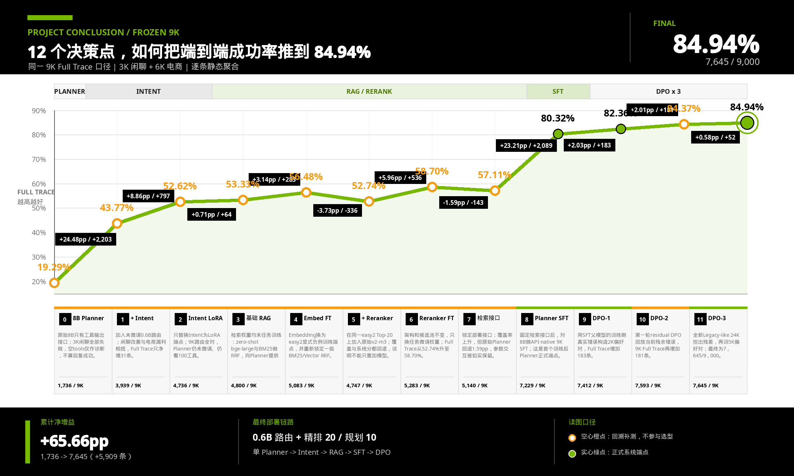

类型预测正确才算路由成功；运行时只有类型决定进入工具系统还是直接响应。
最终 0.6B 路由 · 9,000 / 9,000 · 100.0000%100-TOOL COMMERCE AGENT · INTEGRATED SYSTEM STUDY
让复杂电商请求，
先找齐工具，再排对工具链。
面向固定 100 工具的离线系统：意图分流、候选检索与有序工具链规划；主结果按同一 9K 测试集逐阶段累计。
- 100
- 固定工具空间
- 100.00%
- 截至意图分流 · 9,000 / 9,000
- 98.24%
- 截至候选检索 · 8,842 / 9,000
- 84.94%
- 最终有序工具链 · 7,645 / 9,000
候选检索 · 固定案例演示
SINGLE-TOOL · 1 / 1
案例 01 · 物流查询 · 电商请求检索测试
帮我看看这款台灯的包裹送到哪了。
- 01意图分流电商类 · 进入工具选择通过
- 02混合检索BM25 + 负样本训练向量模型前 40
- 03重排融合精排 20 + 二级 RRF输出 10
已找到全部 1 个目标工具
01get_order_logistics目标
100 工具目录1 个目标工具
INTRODUCTION · 项目介绍
任务、工具与三阶段系统
面向固定 100 工具，先判断请求是否需要工具，再找齐全部必要工具，最后输出正确的有序工具链。
最终结果
系统级工具链成功率 · 84.94%
最终系统采用 0.6B 路由、完整负样本检索链与 8B · 9K 监督训练 + 初始偏好优化 + 两轮残差偏好优化模型；9K 逐阶段通过数为 9,000 → 8,842 → 7,645。结果止于工具 ID 序列，不含真实工具执行。
如何判定成功 · 同一批 9,000 条请求逐阶段计算
一条请求的全部目标工具都进入 Top-K，候选集合才算完整覆盖。
电商请求 6K · 5,842 / 6,000 · 97.3667% ｜ 9K 累计 · 8,842 / 9,000 · 98.2444%集合全对要求工具集合完全一致；工具链全对进一步要求工具及其顺序完全一致。
最终有序工具链 · 7,645 / 9,000 · 84.9444%为什么检索有两个百分比：97.3667% 只计算 6,000 条电商请求；98.2444% 还把 3,000 条被 0.6B 正确分流、无需检索的闲聊计入 9K 系统累计值。电商请求随后还要生成完全正确的有序工具链。
指标示例AllHit@K 与集合 / 工具链全对率 +
阶段 02 · 候选检索详解
完整覆盖，才算一次命中
候选检索只负责把全部必要工具送进短名单；它不判断最终工具集合是否精确，也不评测执行顺序。
主指标AllHit@K
案例 A · 部分命中失败
“查一下订单详情、物流状态，并帮我确认退款进度。”
目标集合
get_order_detailget_order_logisticsget_refund_status
Top-K 已覆盖
get_order_detailget_order_logisticsget_refund_status · 遗漏
命中 2/3，但必要工具集合仍不完整。
案例 B · 完整命中成功
同一个请求，Top-K 覆盖全部三个必要工具。
目标集合
get_order_detailget_order_logisticsget_refund_status
Top-K 已覆盖
get_order_detailget_order_logisticsget_refund_status
目标工具 ⊆ Top-K，才记为一次成功。
阶段 03 · 工具链规划详解
工具选对，不等于顺序排对
工具链规划既要选出精确工具集合，也要按照用户要求与工具依赖生成正确顺序；因此需要同时报告集合与工具链指标。
主指标集合 / 工具链全对率
案例 A · 标准答案目标
用户要求：先查订单详情，再查物流，最后确认退款进度。
get_order_detailget_order_logisticsget_refund_status
工具及其顺序共同构成目标工具链。
案例 B · 模型预测顺序错误
工具集合没有遗漏，但后两步顺序被调换。
get_order_detailget_refund_statusget_order_logistics
集合一致；完整有序序列不一致。
工具范围
100 工具能力底座
100 个工具覆盖 8 个业务域，统一供数据生成、候选检索与工具链规划使用。
完整工具目录浏览 100 个工具及容易混淆的相关工具 +
当前显示 100 个工具
选择任意工具查看能力描述与相关能力；使用上方业务域快速筛选目录。
实验 01 · 意图分流
先判断请求是否需要进入工具系统
区分电商请求与开放闲聊；只有电商请求进入候选检索。
采用说明：最终路由使用 Qwen3-0.6B LoRA checkpoint-2000。它在固定 9K 上分类全对，且比 1.7B 推理更快、显存更低；当前检索只读取原始请求，不使用预测关键词，因此 1.7B 的关键词优势不会传递到后续模块。1.7B 只保留为对照。
01 · 模型选择与主结果先比较路由准确率，再比较两个候选版本的关键词输出 +
01A · 分类路由主指标
比较规则、未微调与 LoRA 版本
七个版本使用同一固定 9K 测试集；Accuracy 与 Macro-F1 衡量路由分类。绿色行是最终采用的 0.6B checkpoint-2000，1.7B 只保留作分类、关键词与成本对照。
| 模型 | 训练状态 | 模型版本 | Accuracy | Macro-F1 | 用途 |
|---|---|---|---|---|---|
| 关键词规则 | 规则基线 | — | 50.22% | 48.84% | 规则起点 |
| Qwen3-0.6B | 未微调 | 原始模型 | 84.76% | 83.74% | 同尺寸训练前基线 |
| Qwen3-0.6B | LoRA · 同一 45.6K 样本 · 原始排列 | 训练步 2000 | 100.00% | 100.00% | 最终路由模型 |
| Qwen3-0.6B | LoRA · 同一 45.6K 样本 · 原始排列 | 训练步 2852 | 99.98% | 99.97% | 同一次训练的结束版本 |
| Qwen3-1.7B | 未微调 | 原始模型 | 90.47% | 88.38% | 更大模型对照 |
| Qwen3-1.7B | LoRA · 同一 45.6K 样本 · 类别均衡排列 | 训练步 1600 | 99.88% | 99.86% | 最低验证损失版本 |
| Qwen3-1.7B | LoRA · 同一 45.6K 样本 · 类别均衡排列 | 训练步 2852 | 99.96% | 99.95% | 关键词与成本对照 |
01B · 两个候选版本
补充比较分类判断与关键词输出
由已有预测离线复算，没有重新推理；分类指标覆盖完整 9,000 条，关键词指标只统计其中 6,000 条电商请求。
| 模型版本 | 分类 Macro-P | 分类 Macro-R | 分类 Macro-F1 | 关键词集合全对率 | 关键词 micro-P | 关键词 micro-R | 关键词 micro-F1 |
|---|---|---|---|---|---|---|---|
| 0.6B · 最终路由 | 100.00% | 100.00% | 100.00% | 56.13% | 81.01% | 83.19% | 82.08% |
| 1.7B · 关键词输出对照 | 99.97% | 99.93% | 99.95% | 57.82% | 81.15% | 87.23% | 84.08% |
关键词按 100 个工具的规范标签做字面集合匹配，不是语义等价评分；候选检索直接使用原始请求，不消费预测关键词。因此 1.7B 的关键词 micro-F1 较高只是输出侧差异，最终系统仍选择分类全对且成本更低的 0.6B。
02 · 数据、训练与推理核对每套数据的用途、训练成本与推理效率 +
02A · 每套数据的用途
区分训练、checkpoint 选择与最终路由比较
| 数据 | 规模 | 用途 | 使用限制 |
|---|---|---|---|
| 监督训练与验证电商轨迹 + 独立闲聊 | 45,606 / 2,400合计 48,006 条 | 训练 0.6B / 1.7B；验证集监控损失并保留检查点 | 两个模型使用同一样本全集，仅样本排列方式不同 |
| 意图分流与路由选择入口二分类 | 9,0006K 电商 + 3K 闲聊 | 比较规则、未微调模型与 LoRA 版本；选出 0.6B 后复用于 9K 系统计分 | 不参与训练；已经用于路由型号选择，不能再视为未见测试 |
| 关键词评测测试集电商子集 | 6,00015,196 个目标标签 | 字面集合全对率与 micro-P / R / F1 | 不是语义评分；候选检索不使用预测关键词 |
隔离检查：训练与测试的归一化请求、轨迹 ID 和相似请求写法分组精确重合均为 0；闲聊样本独立构建。
02B · 训练记录
比较 0.6B / 1.7B 的 LoRA 训练成本
共同固定配置：BF16 · 批量 32 · 2 轮 · 学习率 1e-4 · LoRA r16 / α32 / dropout 0.05 · 最大长度 512。
| 模型与样本排列 | 最低验证损失版本 | 页面报告版本 | 完整训练 | 资源记录 |
|---|---|---|---|---|
| Qwen3-0.6B45,606 条 · 原始排列 | 训练步 2000loss 0.00038608 | 训练步 2000最终路由模型 | 19 分 39 秒2,852 步 | 单进程；训练 GPU 型号与峰值显存未记录 |
| Qwen3-1.7B45,606 条 · 类别均衡排列 | 训练步 1600loss 0.00028329 | 训练步 2852关键词输出对照 | 29 分 05 秒2,852 步 | 单进程；训练 GPU 型号与峰值显存未记录 |
调参范围：意图实验没有逐项控制学习率、轮数和 LoRA 参数进行网格搜索；这里只比较同一训练参数下的两种模型规模与不同训练步数，因此不能称为“完整超参数搜索”。
02C · 离线推理
比较七个路由版本的离线推理成本
六个神经版本均使用 1 × RTX 3090 24GB；0.6B / 1.7B 的批量分别为 64 / 48。
| 模型版本 | 硬件 / 批量 | p50 / p95 | 样本吞吐 | 峰值显存：已分配 / 已保留 |
|---|---|---|---|---|
| 关键词规则单线程 CPU | Montage Jintide C6230R / 1 | 0.1066 / 0.1493ms | 8,727.45 条 / 秒 | — |
| 0.6B · 未微调 | RTX 3090 / 64 | 37.23 / 38.35ms | 27.08 条 / 秒 | 3.65 / 4.73 GiB |
| 0.6B · LoRA · 训练步 2000最终路由模型 | RTX 3090 / 64 | 45.47 / 49.05ms | 21.90 条 / 秒 | 4.04 / 5.10 GiB |
| 0.6B · LoRA · 训练步 2852 | RTX 3090 / 64 | 44.83 / 54.11ms | 22.06 条 / 秒 | 4.04 / 5.10 GiB |
| 1.7B · 未微调 | RTX 3090 / 48 | 54.64 / 58.57ms | 18.52 条 / 秒 | 5.43 / 5.86 GiB |
| 1.7B · LoRA · 训练步 1600最佳验证版本 | RTX 3090 / 48 | 69.58 / 75.51ms | 14.36 条 / 秒 | 6.09 / 6.85 GiB |
| 1.7B · LoRA · 训练步 2852关键词输出对照 | RTX 3090 / 48 | 69.24 / 75.82ms | 14.41 条 / 秒 | 6.09 / 6.85 GiB |
最终选择：相对 1.7B 对照，0.6B 的生成 p50 下降约 34.3%，吞吐提高约 52.0%，峰值已分配显存下降约 33.6%；同时 9K 路由由 8,996 条正确提高到 9,000 条正确。
推理环境：PyTorch 2.8.0+cu128 · Transformers 4.53.2 · PEFT 0.14.0 · 驱动 570.124.04。RTX 3090 记录只绑定推理，不代表历史训练硬件。
延迟如何计算：p50 / p95 是生成阶段在批内平均到每条请求的时间，不含 prompt 构建与分词，也不等同于线上单请求延迟。不同批量以及 CPU 规则方法不直接比较速度；显存只报告本次推理记录的 CUDA 峰值。
实验 02 · 候选检索
候选检索：从训练前基线到最终 Top-10
先训练请求与工具的语义表示，再用交叉编码重排和排名融合生成 Top-10 候选。
候选检索 · 最终采用方案
负样本训练 +
交互重排
bge-large-zh-v1.5 使用跨领域与新增无关负样本训练，bge-reranker-v2-m3 使用按工具类型挑选的负例与检索结果中的难例训练；精排 20 个候选后输出 Top-10。
9K 逐阶段计分 · 完成候选检索后
98.24%
8,842 / 9,000 · 累计通过
日常电商请求 · 6,000 条必要工具全部进入 Top-10 · 97.3667%
- 158 条检索阶段新增失败9K · 9,000 → 8,842
- 97.3667%日常电商请求测试6,000 条 · 必要工具全部进入 Top-10
- 47.09ms精排模块 p5020 个候选 · 同硬件离线均摊
- 84.9444%系统级工具链成功率0.6B 路由 + 8B · 9K SFT + 初始与残差偏好优化 · 7,645 / 9,000 · 未执行真实工具
01 · 训练前基线与候选筛选先选向量与融合方案，再确定候选深度和重排模型 +
用训练前基线确定微调候选与搜索范围
以下结果均来自固定 6,000 条项目基准，用于建立训练前基线，并据此确定进入任务内微调的模型候选和参数搜索范围；最终模型仍按微调后的开发集结果选择。
01A
比较未微调向量模型与融合方案
4 组单路基线与 9 组固定 N=20 融合；按 AllHit@10 选择后续公开重排的统一候选来源。
| 类别 | 模型或配置 | AllHit@6 | AllHit@10 | AllHit@30 | MRR |
|---|---|---|---|---|---|
| 词面检索 | BM25 · 备用分词器 | 49.40% | 55.75% | 75.95% | 76.84% |
| 向量检索 | 未微调 BAAI/bge-base-zh-v1.5 | 35.83% | 44.30% | 71.75% | 52.02% |
| 向量检索 | 未微调 BAAI/bge-large-zh-v1.5 | 38.23% | 47.63% | 73.47% | 56.90% |
| 向量检索 | 未微调 Qwen/Qwen3-Embedding-0.6B | 30.87% | 40.60% | 63.77% | 49.21% |
| 混合检索 | bge-base + BM25 · Union · 每路 Top-20 | 48.87% | 57.93% | 81.35% | 75.52% |
| 混合检索 | bge-base + BM25 · 分数加权 · 每路 Top-20 | 45.43% | 55.58% | 81.48% | 65.03% |
| 混合检索 | bge-base + BM25 · RRF · 每路 Top-20 | 50.57% | 60.47% | 81.37% | 74.65% |
| 混合检索 | bge-large + BM25 · Union · 每路 Top-20 | 51.73% | 62.30% | 85.67% | 73.73% |
| 混合检索 | bge-large + BM25 · 分数加权 · 每路 Top-20 | 46.95% | 59.88% | 85.75% | 67.19% |
| 混合检索 | bge-large + BM25 · RRF · 每路 Top-20（重排候选来源） | 50.83% | 63.67% | 85.73% | 71.19% |
| 混合检索 | Qwen3 向量模型 + BM25 · Union · 每路 Top-20 | 50.42% | 61.93% | 86.78% | 73.34% |
| 混合检索 | Qwen3 向量模型 + BM25 · 分数加权 · 每路 Top-20 | 42.80% | 57.40% | 86.65% | 61.77% |
| 混合检索 | Qwen3 向量模型 + BM25 · RRF · 每路 Top-20 | 48.20% | 62.52% | 86.85% | 71.65% |
01B
选定融合方案后比较一级候选深度
固定 bge-large + BM25，比较两路各自截取的候选数量。N=20 的 RRF AllHit@10 最高；N=30/50 提高候选池覆盖，但候选更多且未改善 RRF Top-10。
| 每路候选 N | 候选池 AllHit | 平均合并候选 | Union A@10 | 加权 A@10 | RRF A@10 | RRF A@30 | 判断 |
|---|---|---|---|---|---|---|---|
| N=10 | 72.93% | 16.86 | 62.18% | 61.60% | 62.97% | 72.93% | 候选较浅 |
| N=20 | 87.88% | 32.72 | 62.30% | 59.88% | 63.67% | 85.73% | 进入公开重排比较 |
| N=30 | 93.45% | 47.14 | 62.32% | 58.20% | 59.63% | 86.50% | 覆盖更高，Top-10 回退 |
| N=50 | 97.65% | 71.17 | 62.40% | 58.68% | 62.35% | 82.22% | 覆盖最高，成本最高 |
01C
固定候选池后筛选待微调的重排模型
5 个公开模型共享 bge-large + BM25 + RRF 候选池：两路各取 Top-20，合并后最多重排 40 个；其中 4 个进入后续任务内微调，Jina 仅作训练前对照。
| 模型 | 推理框架 | AllHit@6 | AllHit@10 | AllHit@30 | MRR |
|---|---|---|---|---|---|
| BAAI/bge-reranker-base | FlagEmbedding | 58.18% | 68.83% | 87.68% | 82.50% |
| BAAI/bge-reranker-large | FlagEmbedding | 59.85% | 69.67% | 87.25% | 82.97% |
| BAAI/bge-reranker-v2-m3 | FlagEmbedding | 56.22% | 65.88% | 87.27% | 82.35% |
| jinaai/jina-reranker-v2-base-multilingual | FlagEmbedding | 46.52% | 57.18% | 86.98% | 71.11% |
| Qwen/Qwen3-Reranker-0.6B | SentenceTransformers | 67.02% | 77.32% | 87.65% | 88.45% |
01D
固定未微调最优重排模型，比较候选深度收益
上表五个模型都使用 N=20；这里单独增加候选数量，只观察质量与成本如何变化。
| 每路候选 N | 平均合并候选 | AllHit@6 | AllHit@10 | AllHit@30 | MRR |
|---|---|---|---|---|---|
| N=10 | 16.86 | 64.68% | 70.58% | 72.93% | 88.35% |
| N=20 | 32.72 | 67.02% | 77.32% | 87.65% | 88.45% |
| N=30 | 47.14 | 67.28% | 78.05% | 91.47% | 88.57% |
| N=50 | 71.17 | 67.48% | 78.37% | 92.83% | 88.62% |
02 · 训练与参数选择从向量训练方案到“精排 20、规划读取 10” +
先确定基础训练参数，再用独立开发集选出最终检索链
先预筛向量模型、学习率和训练轮数，再以同一训练设置比较负样本方案；随后选择一级检索路线和微调重排模型，联合确定精排深度 R、规划输入深度 P 与二级融合参数。
02A
预筛向量模型与基础训练参数
九组 MNRL 对比训练比较模型、轮数与学习率；共同使用 24K 训练轨迹、无显式负样本和固定随机种子 20260707。6,000 条日常电商请求的结果只用于观察参数趋势，最终向量模型由下一步独立开发集决定。
| 向量模型 | 训练设置 | AllHit@6 | AllHit@10 | AllHit@30 | MRR | 训练耗时 | 实验作用 |
|---|---|---|---|---|---|---|---|
| bge-base-zh-v1.5 | 0.25 轮 · lr2e-5 · 批量 64 | 77.8833% | 90.1167% | 99.4167% | 0.944691 | 50.77 秒 | 训练轮数下界 |
| bge-base-zh-v1.5 | 0.5 轮 · lr2e-5 · 批量 64 | 79.1833% | 91.7333% | 99.4667% | 0.952655 | 1 分 45 秒 | 中间轮数 |
| bge-base-zh-v1.5 | 1 轮 · lr1e-5 · 批量 64 | 78.8500% | 92.2500% | 99.3500% | 0.948139 | 7 分 19 秒 | 低学习率 |
| bge-base-zh-v1.5 | 1 轮 · lr2e-5 · 批量 64 | 81.0167% | 93.9500% | 99.5667% | 0.957062 | 7 分 18 秒 | 标准配置 |
| bge-base-zh-v1.5 | 1 轮 · lr3e-5 · 批量 64 | 81.2167% | 94.4500% | 99.6000% | 0.956073 | 7 分 23 秒 | 高学习率 |
| bge-base-zh-v1.5 | 1.5 轮 · lr2e-5 · 批量 64 | 81.5667% | 93.5667% | 99.5333% | 0.958142 | 9 分 25 秒 | 更长训练 |
| bge-large-zh-v1.5 | 0.5 轮 · lr2e-5 · 批量 64 | 85.5167% | 95.1500% | 99.6333% | 0.966435 | 2 分 57 秒 | 半轮对照 |
| bge-large-zh-v1.5 | 1 轮 · lr2e-5 · 批量 64 | 85.8000% | 95.7500% | 99.7167% | 0.966786 | 10 分 18 秒 | 下一步负样本比较的统一起点 |
| Qwen3-Embedding-0.6B | 0.5 轮 · lr2e-5 · 批量 32 | 82.3500% | 93.5833% | 99.5333% | 0.957144 | 5 分 18 秒 | 不同架构对照 |
预筛结论：bge-large 在同类预算下优于另外两种基础模型，训练 1 轮又比 0.5 轮高 0.60pp；因此固定 bge-large、1 轮、lr2e-5 和有效批量 64，继续比较显式负样本。该无负样本版本不是最终模型。
02B
在统一训练设置下比较负样本方案
固定 bge-large、1 轮、lr2e-5 与有效批量 64，五种方案各运行三个随机种子，以独立 1,200 条开发集的 AllHit@10 均值选择；采用方案每组包含 1 个正例和 2 个显式负例。
| 训练方案 | 显式负样本 / 正对 | 单步批量 / 有效批量 | AllHit@10 · 均值 ± 标准差 | AllHit@20 | AllHit@50 | MRR | 选择 |
|---|---|---|---|---|---|---|---|
| 无显式负样本 · 大批量 | 0 | 64 / 64 | 98.7500% ± 0.1179pp | 99.9167% | 100.0000% | 0.996782 | 对照 |
| 无显式负样本 · 小批量 | 0 | 8 / 64 | 99.0000% ± 0.1361pp | 99.9445% | 100.0000% | 0.996875 | 批量对照 |
| 跨领域与新增无关负样本 | 2 | 8 / 64 | 99.5556% ± 0.1416pp | 100.0000% | 100.0000% | 0.997292 | 采用 |
| 同领域与部分替代负样本 | 2 | 8 / 64 | 99.0556% ± 0.3425pp | 99.9722% | 100.0000% | 0.996962 | 种子波动较大 |
| 四类负样本全部加入 | 4 | 8 / 64 | 99.3611% ± 0.1039pp | 99.9722% | 100.0000% | 0.996493 | 未选择 |
02C
筛选一级检索路线，保留联合搜索候选
固定采用向量模型，搜索候选数量、向量权重与 RRF 平滑常数；去除重复排名和被全面支配的路线后，将 24 条候选交给下一级联合评估。
| 阶段 | 搜索或筛选范围 | 路线数 | 进入下一步的依据 |
|---|---|---|---|
| 完整参数网格 | 每路候选 10 / 20 / 30 / 40 / 50 / 75 / 100 × 17 个向量权重 × 10 个 RRF 平滑常数 | 1,190 | 计算 AllHit@10 / @20 / @30 / @40 / @50 与 MRR |
| 排名去重 | 合并产生完全相同工具排名的参数配置 | 1,043 | 每种排名只保留一条代表路线 |
| 多指标前沿 | 按五档 AllHit 与 MRR 去除被全面支配的路线 | 80 | 保留不同覆盖深度上的有效权衡 |
| 联合搜索输入 | 综合前沿、各深度强候选与路线排序后截断 | 24 | 与重排架构、5 档候选深度和二级 RRF 联合评估 |
24 条一级检索候选路线
展示进入重排与规划联合比较的全部路线
每路候选数 N、向量权重与 RRF 平滑常数共同决定一级排名；24 条路线的 AllHit@20 / @30 / @40 / @50 均为 100%，因此表内只展开有区分度的 @6 / @10 与 MRR。最终路线还要与精排和规划联合评估。
| # | 每路候选 N | 向量 / BM25 权重 | RRF 平滑常数 | 平均合并候选数 | AllHit@6 | AllHit@10 | MRR | 后续用途 |
|---|---|---|---|---|---|---|---|---|
| 01 | 30 | 0.70 / 0.30 | 1 | 43.2925 | 95.9167% | 100.0000% | 0.997917 | 联合搜索候选 |
| 02 | 30 | 0.70 / 0.30 | 2 | 43.2925 | 96.2500% | 100.0000% | 0.997917 | 联合搜索候选 |
| 03 | 30 | 0.70 / 0.30 | 3 | 43.2925 | 96.1667% | 100.0000% | 0.997917 | 联合搜索候选 |
| 04 | 30 | 0.70 / 0.30 | 5 | 43.2925 | 96.0000% | 100.0000% | 0.997917 | 联合搜索候选 |
| 05 | 30 | 0.75 / 0.25 | 2 | 43.2925 | 95.9167% | 100.0000% | 0.997917 | 联合搜索候选 |
| 06 | 30 | 0.75 / 0.25 | 3 | 43.2925 | 96.1667% | 100.0000% | 0.997917 | 联合搜索候选 |
| 07 | 30 | 0.75 / 0.25 | 5 | 43.2925 | 96.2500% | 100.0000% | 0.997917 | 联合搜索候选 |
| 08 | 30 | 0.75 / 0.25 | 8 | 43.2925 | 96.2500% | 100.0000% | 0.997917 | 联合搜索候选 |
| 09 | 30 | 0.80 / 0.20 | 5 | 43.2925 | 96.0833% | 100.0000% | 0.997917 | 联合搜索候选 |
| 10 | 30 | 0.80 / 0.20 | 8 | 43.2925 | 96.1667% | 100.0000% | 0.997917 | 联合搜索候选 |
| 11 | 30 | 0.80 / 0.20 | 10 | 43.2925 | 96.1667% | 100.0000% | 0.997917 | 联合搜索候选 |
| 12 | 30 | 0.85 / 0.15 | 10 | 43.2925 | 95.8333% | 100.0000% | 0.997917 | 训练侧难例挖掘 |
| 13 | 40 | 0.70 / 0.30 | 1 | 56.3125 | 95.9167% | 100.0000% | 0.997917 | 联合搜索候选 |
| 14 | 40 | 0.70 / 0.30 | 2 | 56.3125 | 96.2500% | 100.0000% | 0.997917 | 联合搜索候选 |
| 15 | 40 | 0.70 / 0.30 | 3 | 56.3125 | 96.1667% | 100.0000% | 0.997917 | 联合搜索候选 |
| 16 | 40 | 0.75 / 0.25 | 2 | 56.3125 | 95.9167% | 100.0000% | 0.997917 | 联合搜索候选 |
| 17 | 40 | 0.75 / 0.25 | 3 | 56.3125 | 96.1667% | 100.0000% | 0.997917 | 联合搜索候选 |
| 18 | 40 | 0.75 / 0.25 | 5 | 56.3125 | 96.2500% | 100.0000% | 0.997917 | 联合搜索候选 |
| 19 | 40 | 0.80 / 0.20 | 5 | 56.3125 | 96.0833% | 100.0000% | 0.997917 | 联合评估后正式采用 |
| 20 | 40 | 0.80 / 0.20 | 8 | 56.3125 | 96.1667% | 100.0000% | 0.997917 | 联合搜索候选 |
| 21 | 40 | 0.80 / 0.20 | 10 | 56.3125 | 96.1667% | 100.0000% | 0.997917 | 联合搜索候选 |
| 22 | 40 | 0.85 / 0.15 | 10 | 56.3125 | 95.8333% | 100.0000% | 0.997917 | 联合搜索候选 |
| 23 | 40 | 0.85 / 0.15 | 20 | 56.3125 | 95.9167% | 100.0000% | 0.997917 | 联合搜索候选 |
| 24 | 40 | 0.85 / 0.15 | 30 | 56.3125 | 95.8333% | 100.0000% | 0.997917 | 联合搜索候选 |
阅读方式：第 12 条只用于从训练划分挖掘重排难例，不进入最终系统；第 19 条与重排模型、候选数量和最终融合共同比较后被采用。一级检索同分，不代表后续工具链准确率与成本也相同。
02D
微调四个候选重排模型，选择架构与学习率
四个模型都完成任务内微调：先为每个模型选择学习率，再比较三个随机种子的开发集均值。这里选择模型，表内延迟对应各行使用的候选数；最终精排数量在 02F 与规划输入数量一起选择。
| 未微调基线入围模型 | 选中学习率 | AllHit@6 均值 | AllHit@10 均值 | MRR 均值 | 重排候选数 | 估算 p50 | 选择 |
|---|---|---|---|---|---|---|---|
| bge-reranker-base | 2e-5 | 97.6667% | 100.0000% | 0.998056 | 10 | 7.72ms | 架构对照 |
| bge-reranker-large | 6e-5 | 98.2222% | 99.9167% | 0.998472 | 20 | 48.89ms | 未选择 |
| bge-reranker-v2-m3 | 2e-5 | 98.4722% | 100.0000% | 0.997778 | 10 | 24.34ms | 采用 |
| Qwen3-Reranker-0.6B | 5e-6 | 98.3056% | 100.0000% | 0.999306 | 10 | 76.45ms | 延迟较高 |
02E
固定重排模型，选择负样本组合
每组固定为 1 个正例和 7 个负例；所有方案都先精排 10 个候选，并用另一种模型检查负样本结论是否一致。这里只选择训练方案，最终精排数量由下一步确定。
| 重排模型与负样本 | AllHit@6 均值 | AllHit@10 均值 | MRR 均值 | 筛选 p50 · R=10 | 选择 |
|---|---|---|---|---|---|
| bge-reranker-v2-m3 · 3 个按工具类型挑选的负例 + 4 个检索难例 | 98.8889% | 100.0000% | 0.997639 | 24.42ms | 采用 |
| bge-reranker-v2-m3 · 7 个检索难例 | 98.6667% | 100.0000% | 0.998056 | 24.38ms | 未选择 |
| bge-reranker-v2-m3 · 4 个按工具类型挑选的负例 + 3 个随机负例 | 98.4722% | 100.0000% | 0.997778 | 24.34ms | 未选择 |
| Qwen3-Reranker-0.6B · 3 个按工具类型挑选的负例 + 4 个检索难例 | 98.5278% | 100.0000% | 0.999167 | 76.97ms | 架构交互复核 |
02F
联合比较精排数量与规划输入数量
R 是 Cross-encoder 实际评分的候选数，P 是规划模型最终看到的候选数，并始终要求 P≤R。先保留工具链全对率与最高分相差不超过 0.5pp 的组合，再选择候选更少、输入更短的方案。
| 精排 R | 规划 P | 深度阶段二级 RRF第一阶段权重 / 平滑常数 | AllHit@P | 加权工具链全对率 | 平均输入 token | 精排 p50 | 判定 |
|---|---|---|---|---|---|---|---|
| 10 | 5 | 0.1 / 1 | 93.8333% | 89.9762% | 322.54 | 23.95ms | 覆盖不足 |
| 10 | 10 | 0.2 / 8 | 99.3750% | 98.4167% | 454.95 | 23.95ms | 与最高分差距超过预设容差 |
| 20 | 5 | 0.2 / 8 | 93.7917% | 89.9643% | 322.58 | 47.09ms | 覆盖不足 |
| 20 | 10 | 0.4 / 2 | 100.0000% | 99.3571% | 455.42 | 47.09ms | 最终选择 |
| 20 | 20 | 0.1 / 1 | 100.0000% | 99.5833% | 720.11 | 47.09ms | 分数接近最高，输入更长 |
| 30 | 5 | 0.2 / 8 | 93.7917% | 89.9643% | 322.63 | 70.98ms | 覆盖不足 |
| 30 | 10 | 0.3 / 1 | 100.0000% | 99.5714% | 455.66 | 70.98ms | 分数接近最高，精排更慢 |
| 30 | 20 | 0.1 / 8 | 100.0000% | 99.6429% | 721.16 | 70.98ms | 单点最高 |
| 30 | 30 | 0.1 / 8 | 100.0000% | 99.5000% | 984.86 | 70.98ms | 分数接近最高，输入更长 |
| 50 | 5 | 0.3 / 20 | 93.8333% | 89.9762% | 322.65 | 116.96ms | 覆盖不足 |
| 50 | 10 | 0.4 / 2 | 100.0000% | 99.4881% | 455.68 | 116.96ms | 分数接近最高，精排更慢 |
| 50 | 20 | 0.2 / 1 | 100.0000% | 99.5595% | 722.09 | 116.96ms | 分数接近最高，成本更高 |
| 50 | 30 | 0.1 / 8 | 100.0000% | 99.4762% | 986.89 | 116.96ms | 分数接近最高，成本更高 |
| 50 | 50 | 0.1 / 8 | 100.0000% | 99.5833% | 1,513.03 | 116.96ms | 分数接近最高，成本最高 |
选择依据：精排 30 / 规划 20 的单点结果高 0.2857pp，但规划输入多 58.35%，精排 p50 多 50.74%。两者差距小于预先设定的 0.5pp 容差，因此最终采用成本更低的“精排 20 / 规划 10”；不声称它的准确率显著更高。
02G
精排 20、规划读取 10 时，选择最终融合参数
在 2,400 条开发请求上搜索 11 个第一阶段权重 × 10 个 RRF 平滑常数，共 110 组。去除相同排名并检查候选覆盖后，比较 11 条有效路线；接近日常说法与明确写出工具需求的两类请求按 6:1 加权，对应最终测试的 6,000 / 1,000 比例。
| 一级排名权重 / RRF 平滑常数 | 加权工具链全对率 | 接近日常说法的请求 | 明确写出工具需求的请求 | 训练中未见的工具组合 | 平均输入 token | 判定 |
|---|---|---|---|---|---|---|
| 第一阶段权重 0.4 · 平滑常数 8 | 99.5714% | 99.6667% | 99.0000% | 99.3355% | 461.19 | 采用 |
| 第一阶段权重 0.4 · 平滑常数 10 | 99.5714% | 99.6667% | 99.0000% | 99.3355% | 461.20 | 质量同分，输入略长 |
| 第一阶段权重 0.4 · 平滑常数 2 | 99.3571% | 99.4167% | 99.0000% | 99.0033% | 461.24 | 同深度对照 |
| 选出参数后的独立检查 | 最终方案 | 对照方案 | 逐条比较 | 结论 |
|---|---|---|---|---|
| 深度确认 · 1,200 条 | 精排 20 / 规划 10 · 98.8571% | 精排 10 / 规划 10 · 97.9048% | 9 条改善 / 4 条回退 | 提升 0.9524pp；预设约束全部通过 |
| 最终融合确认 · 1,200 条 | 精排 20 / 规划 10 + 0.4 / 8 · 99.5714% | 精排 30 / 规划 20 · 99.4762% | 5 条改善 / 1 条回退McNemar p=0.2188 | 准确率接近时采用成本更低的方案 |
| 长候选压力验证 · 1,200 条 | 精排 20 / 规划 10 · 86.1667% | 精排 30 / 规划 10 · 86.3333% | 仅差 2 / 1,200p=0.8877；对照精排延迟高 50.74% | 微小波动不足以支付成本 |
| 长输入压力验证 · 1,200 条 | 精排 20 / 规划 10 · 86.1667% | 精排 50 / 规划 50 · 84.9167% | P50 低 1.25pp输入 token 为 3.29 倍 | 更长输入产生干扰 |
注意：平滑常数 8 只控制 RRF 排名随名次衰减的速度，不代表候选数量。上表四项检查均在参数确定后运行，结果不再用于改参数；后续规划模型实验直接使用“精排 20 / 规划 10”的候选输入。
02H
汇总最终采用的检索模型与参数
表中按执行顺序列出最终方案：向量与 BM25 各取 40 个、精排 20 个，再向规划模型提供排序后的前 10 个；之后不再根据测试结果改参数。
| 阶段 | 模型或方法 | 训练 / 推理配置 | 阶段输出 |
|---|---|---|---|
| 向量检索 | 任务内微调 bge-large-zh-v1.5 | 每个查询—正例配对单独成组：1 正 + 2 负，共 3 个工具文档采用随机种子 20260731 | 全工具向量排序 |
| 第一阶段融合 | 向量排序 + BM25 加权 RRF | 各取前 40 · 向量权重 0.8 · 平滑常数 5 | 送入精排的 Top-20 |
| 候选精排 | bge-reranker-v2-m3 | 每组 1 正 + 7 负，共 8 个工具文档3 个按工具类型挑选 + 4 个检索难例 · lr2e-5 · 采用随机种子 20260731 | Top-20 交互评分与名次 |
| 最终融合 | 第一阶段名次 + 精排名次 | 第一阶段权重 0.4 · 精排权重 0.6 · 平滑常数 8 | 最终 Top-10全部规划候选均经过 Cross-encoder 评分 |
03 · 最终测试与失败分析在三套独立测试上报告覆盖率，并解释失败与推理成本 +
模型与参数确定后，再报告质量、失败来源与成本
最终方案确定后，依次评测 1,200 条独立请求、6,000 条日常电商请求和 1,000 条工具需求明确的请求。测试结果只用于报告和失败分析，不再用于修改模型或参数。
03A
比较三套测试集的必要工具覆盖率
6,000 条日常电商请求是 9K 系统测试中的电商部分，也是本页检索主结果；1,200 条独立请求和 1,000 条工具需求明确的请求用于补充检查。三套数据均在模型与参数确定后计分。
| 评测集 | 样本数 | AllHit@6 | AllHit@7 | AllHit@8 | AllHit@9 | AllHit@10 | AllHit@20 | MRR |
|---|---|---|---|---|---|---|---|---|
| 日常电商请求9K 系统测试的电商部分 | 6,000 | 91.3500% | 94.0500% | 95.8167% | 96.6667% | 97.3667% | 99.5000% | 0.977048 |
| 独立改写请求参数确定后首次使用 | 1,200 | 98.5833% | 99.5000% | 99.7500% | 99.8333% | 99.8333% | 100.0000% | 0.997778 |
| 工具需求明确的请求 | 1,000 | 99.6000% | 99.9000% | 100.0000% | 100.0000% | 100.0000% | 100.0000% | 0.999500 |
03B
分析 6,000 条日常电商请求中的 158 条检索失败
只要有一个必要工具没有进入最终 Top-10，就记为检索失败。该分析只解释测试结果，不用于后续训练或重新选择参数。
| 检查项 | 结果 | 解释 |
|---|---|---|
| 最终 Top-10 覆盖失败 | 158 / 6,0002.6333% | 5,842 条请求完整覆盖全部必要工具 |
| 必要工具未进入精排 Top-20 | 30 / 158 | 一级 Top-20 覆盖率为 99.5000%；这 30 条在精排前已经漏掉工具 |
| 已进入精排 Top-20，但未进入最终 Top-10 | 128 / 158 | 主要问题发生在 20 个已精排候选压缩为最终 10 个时 |
| 一级融合 Top-10 | 96.7167% | 精排前的 Top-10 完整覆盖 |
| 精排模型 Top-10 | 95.8333% | 仅使用 Cross-encoder 名次的 Top-10 |
| 二级融合 Top-10 | 97.3667% | 融合一级与精排名次后的最终结果 |
诊断结论：大多数残余失败发生在已精排的 20 个候选压缩为最终 10 个时。该结果只描述测试集，不用于构造负样本或重新调参。
03C
候选越多，精排需要多长时间
在同一硬件和同一模型下，测量 Cross-encoder 分别评分 10、20、30、50 个候选的离线批内均摊 p50；该表说明最终“精排 20”相对更深方案的成本差异。
| 精排候选数 R | 规划可见数 P | 精排 p50 | 相对精排 20 | 用途 |
|---|---|---|---|---|
| 10 | ≤10 | 23.95ms | −49.14% | 覆盖约束未通过 |
| 20 | 10 | 47.09ms | 基准 | 最终路线 |
| 30 | ≤30 | 70.98ms | +50.74% | 分数接近、成本更高的对照 |
| 50 | ≤50 | 116.96ms | +148.38% | 长候选压力测试 |
这张表只测什么：只测精排模块，不包含向量编码、BM25、规划生成或真实工具执行；最终方案仍是精排 20 个、输出 10 个。
04 · 数据、成本与复现检查说明每套数据的用途，并记录训练、推理与产物检查 +
04A · 每套数据的用途
训练、选参数和最终测试使用不同数据
| 数据 | 规模 | 用途 | 结果 / 注意事项 |
|---|---|---|---|
| 训练轨迹 | 24,000 组 · 70,012 个正对 | 训练向量模型与重排模型 | 向量训练将每个查询—正例配对展开为 1 正 + 2 负；重排每组为 1 正 + 7 负 |
| 检索开发集 | 1,200 条 | 向量负样本方案与微调重排模型选择 | 五种向量方案和四种重排架构按三随机种子比较 |
| 精排与规划候选数量开发集 | 2,400 条 | 联合比较精排数量、规划输入数量与最终融合 | 规划候选不能多于已精排候选；最高分 0.5pp 内优先选低成本方案 |
| 候选数量独立确认集 | 1,200 条 | 确认“精排 20 / 规划 10”和最终融合参数 | 确认完成后不再修改参数 |
| 长候选压力测试 | 1,200 条 | 检查增加精排或规划候选是否稳定改善结果 | 600 条单工具 + 600 条监督训练未见组合；不参与调参 |
| 独立改写请求测试 | 1,200 条 | 模型与参数确定后的首次检索质量测试 | AllHit@10 99.8333%；查看结果后未继续调参 |
| 日常电商请求测试 | 6,000 条 | 报告必要工具是否全部进入 Top-10 | AllHit@10 97.3667% |
| 工具需求明确的请求测试 | 1,000 条 | 补充检查需求写得更明确时的检索与规划 | AllHit@10 100.0000% |
| 9K 分流—检索—规划联合测试 | 9,000 条 | 将 0.6B 路由与检索、规划预测逐条联合计分 | 工具链成功 7,645 条；不含真实工具执行 |
04B · 基础模型推理
比较训练前检索与公开重排的推理成本
编码与重排延迟均为批内均摊；这些早期运行没有保存 GPU 型号、卡数或峰值显存。
| 类型 | 模型 / 设置 | 加载或构建 | 离线推理计时 | 计时说明 |
|---|---|---|---|---|
| 词面检索 | BM25备用分词器 | — | p50 1.586ms · p95 4.459ms | 单条查询；CPU 型号与线程数未记录 |
| 向量检索 | BAAI/bge-base-zh-v1.5批量 64 | 索引构建 6.1610 秒 | 编码均值 0.7292ms / 条；FAISS p50 / p95 0.0150 / 0.0159ms | BF16 编码；批内均摊 |
| 向量检索 | BAAI/bge-large-zh-v1.5批量 64 | 索引构建 6.2456 秒 | 编码均值 2.0356ms / 条；FAISS p50 / p95 0.0168 / 0.0179ms | BF16 编码；批内均摊 |
| 向量检索 | Qwen/Qwen3-Embedding-0.6B批量 64 | 索引构建 7.6973 秒 | 编码均值 2.2964ms / 条；FAISS p50 / p95 0.0158 / 0.0167ms | BF16 编码；批内均摊 |
| 公开重排 | BAAI/bge-reranker-baseN=20 · 6,000 条 | 5.7550 秒 | p50 14.8817ms · p95 17.7625ms | FP16；批内均摊 |
| 公开重排 | BAAI/bge-reranker-largeN=20 · 6,000 条 | 5.7761 秒 | p50 33.8580ms · p95 37.1013ms | FP16；批内均摊 |
| 公开重排 | BAAI/bge-reranker-v2-m3N=20 · 6,000 条 | 5.3290 秒 | p50 32.4880ms · p95 36.9846ms | FP16；批内均摊 |
| 公开重排 | jinaai/jina-reranker-v2-base-multilingualN=20 · 6,000 条 | 5.8391 秒 | p50 13.8825ms · p95 16.3661ms | FP16；批内均摊 |
| 公开重排 | Qwen/Qwen3-Reranker-0.6BN=20 · 6,000 条 | 10.2432 秒 | p50 119.0920ms · p95 137.8053ms | SentenceTransformers；批内均摊 |
| 候选深度 | Qwen/Qwen3-Reranker-0.6BN=50 · 6,000 条 · 批量 64 | 10.3087 秒 | p50 119.0949ms · p95 141.9109ms | 最大长度 512；批内均摊 |
04C · 训练与推理
记录采用模型的训练与精排推理成本
训练均为单卡；精排延迟来自联合深度实验的同硬件离线批内均摊。
| 阶段 | 配置 | 硬件 | 训练耗时 | 推理或资源记录 |
|---|---|---|---|---|
| 向量模型 | bge-large-zh-v1.5 · 1 轮 · FP16 · 有效批量 64 | 1 × RTX 3090 24GB | 51 分 01.5 秒 | 最终采用版本：开发集编码均值 5.2469ms / 条；FAISS p50 / p95 0.0233 / 0.0259ms |
| 重排模型 | bge-reranker-v2-m3 · 1 轮 / 1,500 步 · FP16 · 有效组批量 16 | 1 × RTX 3090 24GB | 46 分 04.0 秒 | 峰值显存 10.64 / 10.98 GiB（已分配 / 已保留） |
| 最终采用的候选输入 | 各路 Top-40 → 精排 Top-20 → 二级 RRF → 规划 Top-10 | 同硬件深度对照 | — | 精排 p50 47.0914ms规划平均输入 455.42 token；未将模块延迟相加为在线端到端时延 |
04D · 最终一致性检查
确认模型、候选数与评测文件完全对应
| 检查项 | 结果 | 核验内容 |
|---|---|---|
| 模型身份 | 通过 | 向量模型 97816d9a…ec86；重排模型 d1ac0366…d6d |
| 评测行数 | 通过 | 独立改写请求 1,200 · 日常电商 6,000 · 明确工具需求 1,000 |
| 实际候选数 | 通过 | 向量与 BM25 各取 Top-40；精排 Top-20；规划读取最终 Top-10，满足 P≤R |
| 评测清单 | 通过 | 三套评测均保存 manifest、输入哈希与曝光记录 |
| 部署等价性 | 通过 | 最终 Top-10 排名与候选裁剪实现 100% 一致 |
| 脚本语法 | 通过 | 最终配置生成、检索测试、效率测试与固定规划模型测试脚本均通过语法检查 |
结果适用范围：只适用于这套固定 100 工具的合成测试；检索耗时不包含意图分流、规划生成或真实工具执行。
实验 03 · 工具链规划
工具链规划：从未微调模型到 SFT 与偏好优化
先验证把候选缩小到 Top-10 是否有帮助，再选择监督训练参数和数据量；随后固定“精排 20 个、规划读取 10 个”的输入，先学习 SFT 模型的真实错误，再用新出现的残余错误继续两轮偏好优化。
两类请求：6,000 条主测试使用接近日常说法的电商请求；另有 1,000 条请求会明确写出所需工具能力和顺序，只作补充测试。9K–54K 监督数据也采用后一种写法。早期 1,000 条独立请求只验证第一次训练是否有效，因测试协议不同，不能与 6,000 条主测试直接比较。
最终结果 · 9,000 条系统测试
84.94% 请求生成了完全正确的有序工具链
0.6B 路由先区分电商与闲聊，检索模块精排 20 个候选并向规划模型提供前 10 个；8B 模型经过 9K 监督训练、初始 DPO 和两轮残差 DPO。最终 7,645 / 9,000 条请求通过，比相同推理条件下仅做 SFT 增加 416 条；其中 6,000 条日常电商请求的工具链全对率为 77.42%。
最终规划模型
Qwen3-8B · 三阶段偏好优化
9K SFT → 初始 DPO → 两轮残差 DPO · checkpoint-63
规划实验顺序
比较有无 Top-10 → 选择 SFT 参数 → 确定候选输入 → 比较训练量 → 初始与残差 DPO
01 测量 Top-10 候选带来的收益；02 在 9K 上选择监督训练参数；03 接收实验 02 选出的“精排 20 / 规划 10”；04 固定参数比较 9K–54K 训练量；05 先从 SFT 实际错误学习，再用隔离数据上的新残余错误继续优化并锁定最终端点。
01 · Top-10 是否有用模型不变，只比较完整 100 工具与检索 Top-10 +
检验缩小候选范围能否帮助未微调模型
固定模型、提示模板与生成方式，只改变输入：无 RAG 展示完整 100 工具，RAG 按检索顺序提供 Top-10。该配对只量化 RAG 贡献，不参与候选深度选择。
| 评测集 | 基础模型 | 无 RAG · 完整 100 工具集合 / 工具链 / 格式合规率 | RAG · 当前检索 Top-10集合 / 工具链 / 格式合规率 | RAG 工具链提升 |
|---|---|---|---|---|
| 日常电商请求 6K | 未微调 4B | 26.9500% / 25.2167% / 84.6833% | 35.9667% / 33.9333% / 94.1833% | +8.7167pp |
| 未微调 8B | 30.7500% / 28.9333% / 92.5333% | 37.3333% / 35.6667% / 94.1500% | +6.7333pp | |
| 工具需求明确的请求 1K | 未微调 4B | 52.3000% / 50.4000% / 93.6000% | 54.5000% / 53.8000% / 87.0000% | +3.4000pp |
| 未微调 8B | 57.4000% / 54.6000% / 96.7000% | 62.3000% / 60.9000% / 89.2000% | +6.3000pp |
本步结论：Top-10 在 4 / 4 组配对中提高工具链全对率；工具需求明确的请求的格式合规率仍会下降，说明缩小候选范围不能替代监督训练。
02 · 监督训练参数选择先验证训练收益，再在 9K 上选择学习率、轮数与 LoRA 参数 +
02A · 固定 Top-10，检验第一次监督训练是否有效
固定同一批 1,000 条早期独立请求与同一 Top-10，只改变模型权重；该表回答训练方向是否有效。该协议早于最终日常电商请求 6K，绝对分数不能直接横向比较。
| 模型 | 未微调 · 固定 Top-10集合 / 工具链全对率 | 第一次监督训练 · 同一 Top-10集合 / 工具链全对率 | 工具链提升 |
|---|---|---|---|
| Qwen3-4B | 54.00% / 53.10% | 99.00% / 99.00% | +45.90pp |
| Qwen3-8B | 60.00% / 59.10% | 98.30% / 98.30% | +39.20pp |
验证结果：第一次监督训练在这套早期独立测试上把工具链全对率提高到 98%–99%，因此继续在作业规定的 9K 基础数据上选择训练参数；这套请求写法更直接、测试数据与候选输入也不同，因此高分不代表 6K 日常电商主结果。
02B · 用 4B 完整搜索，再把前三名参数放到 8B 上确认
先用 9K 数据选择训练参数，再固定这套参数比较 9K / 18K / 36K / 54K；不是先看到数据量结果后再专门优化 9K。三轮 4B 搜索共产生 21 个唯一模型版本，随后只在 8B 上确认前三名。
| 阶段 | 模型 | 搜索内容 | 运行规模 | 作用 |
|---|---|---|---|---|
| 第一轮 | Qwen3-4B | 学习率 1e-5 / 3e-5 / 5e-5 × 1 / 2 / 3 轮 | 9 个配置 | 选择学习率与训练轮数 |
| 第二轮 | Qwen3-4B | LoRA 秩 8 / 16 / 32 × dropout 0 / 0.05 / 0.1 | 9 个配置含与前一轮重复配置 | 选择 LoRA 容量与正则强度 |
| 第三轮 | Qwen3-4B | 前两轮各取前三名，完成 3 × 3 交叉确认 | 9 个配置含可复用配置 | 确认参数交互后的最终组合 |
| 4B 汇总 | Qwen3-4B | 三轮去重 | 21 个唯一模型版本 | 确定 4B 训练参数 |
| 8B 确认 | Qwen3-8B | 把 4B 前三名参数用于 8B | 3 个配置 | 确认两种模型采用同一组参数 |
02C · 第一轮：比较学习率与训练轮数
Qwen3-4B、9K 数据、LoRA 秩 16、dropout 0.05；指标为当时 2,400 条开发集 RAG 工具链全对率。
| 学习率 | 训练 1 轮 | 训练 2 轮 | 训练 3 轮 |
|---|---|---|---|
| 1e-5 | 82.4167% | 88.1667% | 89.6250% |
| 3e-5 | 90.1250% | 91.7500% | 92.3750% |
| 5e-5 | 90.9583% | 92.1250% | 92.1667% |
轮数依据：三个学习率下都是训练 3 轮最好；第一轮单点最高为 3e-5 / 3 轮，最终学习率还需结合下一轮 LoRA 参数做交叉确认。
02D · 第二轮：比较 LoRA 秩与 dropout
固定学习率 3e-5、训练 3 轮；LoRA alpha 始终设为秩的 2 倍。
| LoRA 秩 | dropout 0 | dropout 0.05 | dropout 0.1 |
|---|---|---|---|
| 8 | 91.6667% | 91.8333% | 91.5417% |
| 16 | 92.1667% | 92.3750% | 92.1667% |
| 32 | 92.2917% | 92.5417% | 91.4167% |
02E · 第三轮：交叉确认前两轮的优胜参数
行是第一轮前三名，列是第二轮前三名；表内为 Qwen3-4B 开发集工具链全对率，已有配置直接复用评测结果。
| 学习率 / 轮数 | 秩 32 / dropout 0.05 | 秩 16 / dropout 0.05 | 秩 32 / dropout 0 |
|---|---|---|---|
| 3e-5 / 3 | 92.5417% | 92.3750% | 92.2917% |
| 5e-5 / 3 | 93.0417% | 92.1667% | 92.9167% |
| 5e-5 / 2 | 92.2083% | 92.1250% | 92.3333% |
02F · 在 8B 上复核前三名，确定统一训练参数
8B 不重复完整网格，只确认 4B 排名前三的配置；4B 与 8B 最终采用同一组参数。
| 模型 | 学习率 / 轮数 / LoRA 秩 / dropout | 开发集工具链全对率 | 判定 |
|---|---|---|---|
| Qwen3-4B | 5e-5 / 3 / 32 / 0.05 | 93.0417% | 采用该组参数 |
| Qwen3-8B | 5e-5 / 3 / 32 / 0.05 | 93.5417% | 采用同一组参数 |
| Qwen3-8B | 3e-5 / 3 / 32 / 0.05 | 93.4583% | 学习率对照 |
| Qwen3-8B | 5e-5 / 3 / 32 / 0 | 92.9167% | dropout 对照 |
这张表能证明什么：完整参数搜索使用较早的 2,400 条开发请求和当时的 Top-10 候选，不是用当前“精排 20 / 规划 10”重新评测全部 24 个版本；8B 只复核了 4B 排名前三的配置，也没有分别训练 1 / 2 / 3 轮。因此这里只能得出“先在 9K 上确定统一训练参数，再用同一组参数比较 9K–54K”，不能声称每种数据量都已单独调到最优。
03 · 确定规划模型的候选输入直接采用实验 02 选出的“精排 20 / 规划 10” +
03A · 检索模块最终给规划模型什么
实验 02 已经比较候选数量、融合参数以及长输入成本。本节只列出最终输入格式，避免重复展示同一组选参结果。
| 处理环节 | 最终配置 | 为什么这样做 | 输出 |
|---|---|---|---|
| 一级检索 | BM25 / 向量各取 Top-40 · 向量权重 0.8 · 平滑常数 5 | 保留词面与语义互补 | 统一候选排名 |
| 交互精排 | bge-reranker-v2-m3 · R=20 | 规划可见候选必须全部经过 Cross-encoder 评分 | Top-20 精排名次 |
| 二级融合 | 一级权重 0.4 · 精排权重 0.6 · 平滑常数 8 | 融合两路互补名次 | 最终 Top-10 |
| 规划输入 | P=10 · 保持最终检索顺序 | P≤R | 一次生成工具集合与顺序 |
数据使用规则：14 组精排 / 规划数量结果、110 组融合参数和长输入压力测试都在实验 02；后续只训练规划模型，不再利用 6K / 1K 最终测试去修改检索参数。
04 · 比较监督训练量固定训练参数，比较 9K / 18K / 36K / 54K +
04A · 增加训练数据是否继续改善工具链准确率
先在 9K 数据上选定学习率 5e-5、训练 3 轮、LoRA r32、dropout 0.05；随后让 4B / 8B 的 9K、18K、36K、54K 数据共用这套参数和同一“精排 20 / 规划 10”输入。主指标来自 2,400 条开发请求，并按最终 6K 日常电商 / 1K 明确工具需求的比例做 6:1 加权；另用 1,200 条训练中未出现过目标工具组合的请求检查组合泛化。
| 模型 | 训练量 | 2.4K 开发请求 · 完整 100 工具 | 2.4K 开发请求 · Top-10 | 1.2K 未见组合 · 完整 100 工具 | 1.2K 未见组合 · Top-10 | 判定 |
|---|---|---|---|---|---|---|
| 4B | 9K | 94.1429% | 98.5119% | 87.8333% | 95.6667% | 4B 采用 9K |
| 4B | 18K | 93.7500% | 97.6310% | 84.4167% | 94.0000% | 未选择 |
| 4B | 36K | 93.3929% | 97.5952% | 84.3333% | 94.7500% | 未选择 |
| 4B | 54K | 96.6190% | 98.1905% | 90.5833% | 94.8333% | 第二名 |
| 8B | 9K | 96.8690% | 98.9405% | 90.5833% | 97.5833% | 作为 DPO 起点 |
| 8B | 18K | 95.7143% | 98.5476% | 86.3333% | 95.3333% | 未选择 |
| 8B | 36K | 96.1905% | 98.7857% | 90.5833% | 97.0000% | 第二名 |
| 8B | 54K | 96.8095% | 98.5357% | 90.2500% | 96.1667% | 未选择 |
为什么选择 8B / 9K：在同一模型内部，4B / 8B 都是 9K 得分最高：4B 的 9K 比次优 54K 高 0.3214pp，8B 的 9K 比次优 36K 高 0.1548pp。再比较两种模型的 9K 版本，8B 在 2.4K 开发请求高 0.4286pp，在 1.2K 未见工具组合请求高 1.9166pp，因此选 8B / 9K 进入 DPO。这个结论只适用于统一训练参数，不代表每种数据量单独调参后仍是 9K 最好。
04B · 选出 9K 版本后，再比较完整 100 工具与 Top-10
模型权重和解码方式保持不变，只改变候选范围：完整目录一次展示 100 个工具，RAG 只提供检索 Top-10。6,000 条日常电商请求是主测试，1,000 条工具需求明确的请求是补充测试；4B / 8B 在两套测试中都受益于 Top-10。
| 评测集 | 9K 监督训练模型 | 无 RAG · 完整 100 工具集合 / 工具链 / 格式合规率 | RAG · 最终 Top-10集合 / 工具链 / 格式合规率 | RAG 工具链提升 |
|---|---|---|---|---|
| 日常电商请求 6K主要测试集 | Qwen3-4B | 57.2000% / 56.5167% / 95.8167% | 71.3500% / 71.0833% / 99.4167% | +14.5667pp |
| Qwen3-8B | 59.8833% / 59.3667% / 96.0000% | 70.6000% / 70.4833% / 99.3167% | +11.1167pp | |
| 工具需求明确的请求 1K补充测试 | Qwen3-4B | 93.2000% / 93.1000% / 98.8000% | 98.3000% / 98.3000% / 100.0000% | +5.2000pp |
| Qwen3-8B | 95.5000% / 95.5000% / 99.9000% | 98.1000% / 98.1000% / 100.0000% | +2.6000pp |
完整对照：连同 01 的未微调结果，共有 4B / 8B × 训练前后 × 两套测试的 8 组同模型比较，Top-10 的工具链全对率全部提高。训练数据和 1K 补充测试采用相近的明确需求写法，因此得分较高；日常电商请求明显更难，也是系统主结果。
04C · DPO 前，9K 系统中仅做 SFT 的结果
3,000 条闲聊只需正确分流；6,000 条电商请求还要找齐候选并生成完全正确的有序工具链。8B 已依据开发请求和训练中未见的工具组合请求选出，下表只记录最终测试结果，不再用来改选模型。
| 规划模型 | 9K 集合成功率 | 9K 工具链成功率 | 工具链通过数 | 用途 |
|---|---|---|---|---|
| Qwen3-4B · 9K 监督训练 | 80.9000% | 80.7222% | 7,265 / 9,000 | 最终测试中的 4B 对照 |
| Qwen3-8B · 9K 监督训练checkpoint-846 | 80.4000% | 80.3222% | 7,229 / 9,000 | DPO 训练起点 |
为什么不在这里改选 4B：最终 9K 测试中，4B 的工具链点估计高 0.4000pp；但模型选择已在查看这套测试前由开发请求和未见工具组合请求完成。为避免用最终测试调参，DPO 仍从预先选定的 8B checkpoint-846 开始。
04D · DPO 前：8B 在不同工具链长度上的准确率
该表记录 DPO 前不同工具链长度的准确率；DPO 后按相同方法统计的结果见 05F。
| 目标工具数 | 样本数 | 工具链全对数 | 工具链全对率 |
|---|---|---|---|
| 1 | 3,000 | 2,594 | 86.4667% |
| 2 | 481 | 325 | 67.5676% |
| 3 | 681 | 377 | 55.3598% |
| 4 | 592 | 312 | 52.7027% |
| 5 | 653 | 356 | 54.5176% |
| 6 | 593 | 265 | 44.6880% |
进入下一步的固定条件：候选输入为“精排 20 / 规划 10”，模型为 8B · 9K SFT checkpoint-846；接入最终 0.6B 路由后的 9K 工具链成功率为 80.3222%，这是 DPO 前的比较起点，不是项目最终结果。
05 · 偏好优化与最终测试从 SFT 实际错误到两轮残差 DPO +
05A · 初始 DPO：用 SFT 模型实际生成的错误构造偏好数据
候选输入始终是“精排 20 / 规划 10”，不调整向量模型、重排模型或 RRF。每一对数据都包含训练标注中的正确工具链，以及同一请求下 SFT 模型实际生成的错误工具链；错误输出必须能解析，只是工具选错或顺序排错。
| 构建环节 | 4B | 8B | 隔离与用途 |
|---|---|---|---|
| 用于寻找 SFT 错误的训练请求 | 17,000 条；先排除 37 条必要工具未全部进入 Top-10 的请求 | 避免要求规划模型选择候选中不存在的工具 | |
| 可用于 DPO 的实际错误 | 2,156 条 | 2,157 条 | 只保留可解析的工具集合错误或顺序错误 |
| DPO 偏好数据 | 2,000 对1,916 个唯一请求 + 84 个同题第二次真实生成 | 2,000 对请求与来源轨迹全部唯一 | 1,800 对训练 + 200 对监控；日常说法 / 明确工具需求 1,600 / 400；覆盖 100 个工具 |
| 初始 DPO 参数开发集 | 1,400 条日常说法 1,200 + 明确工具需求 200 | 与 SFT、初始偏好数据和受控回放在请求及轨迹 ID 上均不重叠 | |
| 初始 DPO 受控回放 | 日常电商 6K + 明确工具需求 1K + 9K 分流—检索—规划联合测试 | 初始参数与随机种子确定后使用；checkpoint-100 结果只作为残差训练起点 | |
哪些数据没有进入训练：没有使用手工伪造的错误答案、只有格式错误的输出或任何最终测试样本。4B 中有 84 个请求各使用了 SFT 模型的第二次实际错误生成，但每个请求最多贡献两对。
05B · 初始 DPO：分别选择 4B / 8B 参数
使用 MS-SWIFT swift rlhf 与 Qwen3 对话模板，损失为 sigmoid DPO。每个模型训练 4 个学习率 × beta 组合，并评测 0.5 / 1 轮，共 8 个候选点；所有样本均未截断。
| 模型 | 学习率 | beta | 轮数 | 无 RAG 工具链 | RAG 集合 | RAG 工具链 | 格式合规率 | 3–6 工具最差值 | 判定 |
|---|---|---|---|---|---|---|---|---|---|
| 4B · 仅 SFT | — | — | — | 61.5714% | 74.4286% | 73.9286% | 99.7857% | 56.9536% | 同输入比较起点 |
| 4B | 5e-7 | 0.05 | 0.5 | 62.7143% | 76.0714% | 75.7143% | 99.8571% | 58.2781% | 通过 |
| 4B | 5e-7 | 0.05 | 1 | 62.5000% | 76.6429% | 76.2857% | 99.8571% | 60.5263% | 通过 |
| 4B | 5e-7 | 0.10 | 0.5 | 62.7857% | 76.0000% | 75.7143% | 99.8571% | 58.9404% | 通过 |
| 4B | 5e-7 | 0.10 | 1 | 62.7143% | 76.5714% | 76.2143% | 99.8571% | 60.2649% | 通过 |
| 4B | 1e-6 | 0.05 | 0.5 | 62.2857% | 78.0000% | 77.7143% | 99.9286% | 61.8421% | 通过 |
| 4B | 1e-6 | 0.05 | 1 | 62.6429% | 78.6429% | 78.3571% | 99.9286% | 62.5000% | 采用 |
| 4B | 1e-6 | 0.10 | 0.5 | 62.6429% | 77.8571% | 77.5714% | 99.8571% | 61.1842% | 通过 |
| 4B | 1e-6 | 0.10 | 1 | 62.8571% | 78.5714% | 78.2857% | 99.9286% | 61.8421% | 通过 |
| 8B · 仅 SFT | — | — | — | 64.2857% | 74.7857% | 74.5714% | 99.8571% | 57.8947% | 同输入比较起点 |
| 8B | 5e-7 | 0.05 | 0.5 | 64.2857% | 76.2143% | 76.0000% | 99.8571% | 60.5263% | 通过 |
| 8B | 5e-7 | 0.05 | 1 | 64.2143% | 76.5714% | 76.3571% | 99.8571% | 61.1842% | 通过 |
| 8B | 5e-7 | 0.10 | 0.5 | 64.5000% | 76.1429% | 75.9286% | 99.8571% | 60.9272% | 通过 |
| 8B | 5e-7 | 0.10 | 1 | 64.2857% | 76.7857% | 76.5000% | 99.8571% | 61.8421% | 通过 |
| 8B | 1e-6 | 0.05 | 0.5 | 64.0714% | 77.5714% | 77.5000% | 99.7857% | 62.5000% | 通过 |
| 8B | 1e-6 | 0.05 | 1 | 64.1429% | 77.9286% | 77.8571% | 99.5714% | 62.5000% | 格式合规率低于预设下限 |
| 8B | 1e-6 | 0.10 | 0.5 | 64.4286% | 77.6429% | 77.5000% | 99.7857% | 62.5000% | 通过 |
| 8B | 1e-6 | 0.10 | 1 | 64.5714% | 77.9286% | 77.8571% | 99.7143% | 62.5000% | 采用 |
选择规则：先比较 Top-10 输入下的工具链全对率、集合全对率和 3–6 工具中的最低分，再检查完整 100 工具输入、JSON 格式以及两类请求是否明显下降。8B 的 beta 0.05 / 1 轮虽然主分数并列，但格式合规率低于预设下限，因此选择 beta 0.10。
05C · 初始 DPO：用三个随机种子确认所选参数是否稳定
20260802 是正式网格种子；只用 20260803 / 20260804 复训确认，不从三个种子中重新挑最高结果。
| 采用参数 | 仅 SFT | seed 20260802 | seed 20260803 | seed 20260804 | DPO 三次均值 | DPO 最低值 | 标准差 | 判定 |
|---|---|---|---|---|---|---|---|---|
| 4B · lr1e-6 / beta 0.05 / 1 轮 | 73.9286% | 78.3571% | 78.2857% | 78.0000% | 78.2143% | 78.0000% | 0.1543pp | 通过 |
| 8B · lr1e-6 / beta 0.10 / 1 轮 | 74.5714% | 77.8571% | 77.9286% | 77.7857% | 77.8571% | 77.7857% | 0.0583pp | 通过 |
稳定性结果：4B / 8B 的 DPO 三次均值分别比仅 SFT 高 4.2857pp / 3.2857pp；三次训练都满足 JSON 格式、完整 100 工具输入、两类请求和长工具链的预设下限。
05D · 初始 DPO：在完全相同的推理条件下比较 SFT 与 DPO
每一行中的“仅 SFT”和“SFT + DPO”使用相同输入、提示、批量、分片、精度、随机种子和贪心解码。因此 DPO 增量只能在同一行内计算，不能与 04B 的另一批 SFT 预测交叉相减。
| 模型 | 评测集 | 模型可见的工具 | 仅 SFT集合 / 工具链 / 格式合规率 | SFT + DPO集合 / 工具链 / 格式合规率 | 工具链增量 |
|---|---|---|---|---|---|
| 4B | 日常电商请求 6K | 完整 100 工具 | 57.3000% / 56.6333% / 95.7167% | 57.3167% / 56.7167% / 96.6500% | +0.0833pp |
| RAG Top-10 | 71.3500% / 71.0667% / 99.4167% | 74.9667% / 74.7000% / 99.6333% | +3.6333pp | ||
| 工具需求明确的请求 1K | 完整 100 工具 | 93.1000% / 93.0000% / 98.8000% | 93.2000% / 93.1000% / 98.9000% | +0.1000pp | |
| RAG Top-10 | 98.4000% / 98.4000% / 100.0000% | 99.1000% / 99.1000% / 100.0000% | +0.7000pp | ||
| 8B | 日常电商请求 6K | 完整 100 工具 | 59.8500% / 59.3167% / 95.9167% | 59.1833% / 58.9167% / 96.6167% | −0.4000pp |
| RAG Top-10 | 70.6000% / 70.4833% / 99.3167% | 73.6667% / 73.5333% / 99.2333% | +3.0500pp | ||
| 工具需求明确的请求 1K | 完整 100 工具 | 95.8000% / 95.8000% / 99.9000% | 94.9000% / 94.9000% / 99.9000% | −0.9000pp | |
| RAG Top-10 | 98.1000% / 98.1000% / 100.0000% | 99.1000% / 99.1000% / 100.0000% | +1.0000pp |
中间结果：8B 在 6K 日常电商 Top-10 测试中改善 210 条、变差 27 条，McNemar p=2.68e-36；在 1K 明确工具需求 Top-10 测试中改善 10 条、变差 0 条，p=0.001953。该模型随后作为残差 DPO 的固定起点，不是最终部署权重。
05E · 初始 DPO：记录 9K 中间端点
3,000 条闲聊需正确识别且不进入工具检索；6,000 条电商请求还需候选完整，并生成集合与顺序均完全正确的工具链。该表保留初始 DPO 的受控结果，用来说明后续残差训练从哪里开始。
| 规划模型 | 仅 SFT · 集合 / 工具链 | 初始 DPO · 集合 / 工具链 | 初始 DPO 工具链通过数 | 工具链增量 | 用途 |
|---|---|---|---|---|---|
| 4B · 9K | 80.9000% / 80.7111% | 83.3111% / 83.1333% | 7,482 / 9,000 | +2.4222pp | 4B 对照，不再继续残差训练 |
| 8B · 9K初始 DPO checkpoint-100 | 80.4000% / 80.3222% | 82.4444% / 82.3556% | 7,412 / 9,000 | +2.0333pp | 两轮残差 DPO 的起点 |
为什么继续使用 8B：4B 初始 DPO 在这套 9K 测试上的点估计更高，但 8B 分支已在查看最终测试前依据开发请求与未见工具组合请求锁定；后续只沿该分支训练，避免使用最终测试反向选择模型。
05F · 两轮残差 DPO：继续学习上一阶段仍答错的真实样本
另建两套各 1,200 条、写法接近日常请求的开发集与确认集；两者不进入训练，并与 SFT、初始 DPO、偏好数据和冻结测试隔离。第一轮使用 2,200 对真实错误；第二轮从全新 24K 训练侧请求的 5,993 个真实语义错误中选取 5,000 对。
| 训练阶段 | 偏好对 | 开发集工具链全对率 | 独立确认集工具链全对率 | 确认集格式合规率 | 判定 |
|---|---|---|---|---|---|
| 初始 DPO checkpoint-100 | 2,000 | 72.5000% | 72.8333% | 99.3333% | 残差训练起点 |
| 残差 DPO 第一轮 · checkpoint-196 | 2,200 | 77.5000% | 75.4167% | 99.2500% | 进入第二轮 |
| 残差 DPO 第二轮 · checkpoint-63 | 5,000 | 78.1667% | 76.4167% | 99.1667% | 采用 |
| 第三批全新残余错误 | 5,000 | 78.4167% | 76.0833% | 98.7500% | 确认集下降，不采用 |
| 旧错误 / 新残余错误各半回放 | 5,000 | 78.4167% | 76.4167% | 98.6667% | 准确率持平但格式变差，不采用 |
停止依据：第二轮在学习率 1e-6、beta 0.1 的第 63 步达到更好的独立确认结果；后续全新错误和旧新回放都没有同时改善工具链与格式合规率，说明同分布残差训练已经出现饱和。
05G · 用三个训练种子确认第二轮结果
三个种子使用同一配方；seed 20260804 是原始选择种子，另外两个只检查稳定性，不从三次结果中重新挑选最高开发分。
| 训练种子 | 开发集工具链全对率 | 独立确认集工具链全对率 | 判定 |
|---|---|---|---|
| 20260804 | 78.1667% | 76.4167% | 保留原始选择 |
| 20260805 | 78.1667% | 76.1667% | 稳定性检查 |
| 20260806 | 78.3333% | 75.9167% | 稳定性检查 |
| 三次均值 | 78.2222% | 76.1667% | 未重新选种子 |
05H · 锁定后一次性报告最终测试
模型在隔离开发集、独立确认集与三个种子检查后锁定，随后才执行本轮 6K、1K 与 9K 最终回放。下表将初始 DPO checkpoint-100 与最终第二轮残差 DPO checkpoint-63 作同口径比较。
| 正式评测 | 初始 DPOcheckpoint-100 | 最终残差 DPOcheckpoint-63 | 工具链提升 |
|---|---|---|---|
| 日常电商请求 6K集合 / 工具链 / 格式合规率 | 73.6667% / 73.5333% / 99.2333% | 77.5833% / 77.4167% / 99.1000% | +3.8834pp |
| 工具需求明确的请求 1K集合 / 工具链 / 格式合规率 | 99.1000% / 99.1000% / 100.0000% | 99.6000% / 99.6000% / 100.0000% | +0.5000pp |
| 9K 分流—检索—规划联合测试集合 / 有序工具链 | 82.4444% / 82.3556% | 85.0556% / 84.9444%7,655 / 7,645 条 | +2.5889pp |
最终端点：Qwen3-8B · 9K SFT → 初始 DPO → 两轮残差 DPO checkpoint-63。相对仅 SFT，6K 工具链全对率累计提高 6.9334pp，9K 系统工具链成功数增加 416 条。
05I · 最终模型改善了哪些工具链，剩余错误在哪里
下面只分析 6,000 条日常电商请求上的最终 8B Top-10 结果。该测试集已经打开，其错误只用于解释结果，不再回流训练或选择 checkpoint。
| 目标工具数 | 样本数 | 仅 SFT | 最终残差 DPO | 增量 |
|---|---|---|---|---|
| 1 | 3,000 | 86.4667% | 91.3667% | +4.9000pp |
| 2 | 481 | 67.5676% | 76.0915% | +8.5239pp |
| 3 | 681 | 55.3598% | 65.3451% | +9.9853pp |
| 4 | 592 | 52.7027% | 64.1892% | +11.4865pp |
| 5 | 653 | 54.5176% | 62.4809% | +7.9633pp |
| 6 | 593 | 44.6880% | 51.4334% | +6.7454pp |
| 6K 最终结果 · 互斥归因 | 条数 | 占 6K | 含义 |
|---|---|---|---|
| 工具链完全正确 | 4,645 | 77.4167% | 集合与顺序都正确 |
| 检索未找齐必要工具 | 157 | 2.6167% | Top-10 中缺少至少一个目标工具 |
| 规划模型集合选择错误 | 1,134 | 18.9000% | 候选可用，但漏选、多选或错选工具 |
| 输出格式错误 | 54 | 0.9000% | 重复、未知或越过候选范围 |
| 只错顺序 | 10 | 0.1667% | 工具集合正确，但顺序不正确 |
当前瓶颈：检索成功样本中的工具链全对率为 79.5104%；1,134 条集合选择错误远多于其他错误，且 5–6 工具长链仍最低。检索模块单独统计有 158 条 Top-10 失败；这里先归入格式错误，因此互斥归因剩 157 条。6K 达到 90% 需要 5,400 条正确，目前还差净修复 755 条。冻结测试不再用于继续调参。
06 · 数据、隔离与运行环境每套数据用来做什么，以及训练和推理花费多少 +
06A · 每套数据的用途
训练、选参数和最终测试彼此分开
| 阶段与数据 | 规模 | 回答的问题 | 是否参与选择 | 结果 / 使用限制 |
|---|---|---|---|---|
| 早期训练方向验证独立请求 | 1,000 条 | 固定 Top-10 时，首次监督训练是否学会工具集合与顺序 | 只确认方向 | 协议早于最终 6K，绝对分数不可直接比较 |
| 9K 监督训练参数开发工具需求明确的请求与当时候选 | 2,400 条 | 选择学习率、训练轮数、LoRA 秩与 dropout | 是 | 4B 21 个唯一版本；8B 确认 3 个优胜配置 |
| 候选数量与融合开发集实验 02 | 2,400 条开发 + 1,200 条确认 | 联合选择精排数量、规划输入数量与最终融合参数 | 是 | 规划候选必须全部经过精排；最终采用精排 20 / 规划 10 |
| 长候选压力测试参数确定后 | 1,200 条 | 增加精排或规划候选是否稳定改善准确率 | 否 | 只解释长输入干扰；完整结果见实验 02 |
| SFT 训练数据明确写出工具需求 | 9K / 18K / 36K / 54K后者逐级包含前者 | 固定同一训练参数，检查增加数据是否改善质量 | 训练输入 | 不混入检索模型使用的 24K 轨迹 |
| SFT 训练量与模型开发集日常说法 + 明确工具需求 | 2,400 条开发 + 1,200 条未见组合 | 先为 4B / 8B 选择训练量，再比较两个模型 | 是 | 按 6:1 加权；最终选择 8B · 9K |
| 初始 DPO 偏好数据SFT 实际错误 | 每模型 2,000 对1,800 训练 + 200 监控 | 学习把同一 Top-10 下的错误工具链改成正确工具链 | 训练输入 | 覆盖 100 工具；不含手工错误答案或最终测试 |
| 初始 DPO 参数开发集日常说法 + 明确工具需求 | 1,400 条1,200 / 200 | 选择学习率、beta 与轮数，并检查长链、格式和完整 100 工具输入 | 是 | 与 SFT、DPO 偏好数据和 6K / 1K 最终测试均无重叠 |
| 残差 DPO 偏好数据上一阶段仍答错的真实输出 | 第一轮 2,200 对1,980 / 220 第二轮 5,000 对4,500 / 500 | 继续学习更接近日常说法的残余错误 | 训练输入 | 第二轮来自全新 24K 训练侧请求；5,000 个请求与来源均唯一，覆盖 100 工具 |
| 残差 DPO 开发与确认集两套隔离的日常说法请求 | 1,200 + 1,200 条 | 选择两轮 checkpoint、做三种子确认，并拒绝后续无增益训练 | 是 | 开发 / 确认检索 AllHit@10 为 97.75% / 97.25%；均不进入训练 |
| 最终测试锁定残差 DPO 后一次性报告 | 日常电商 6K + 明确工具需求 1K + 9K 联合测试 | 第二轮 checkpoint、三个种子与停止结论确定后，报告最终结果 | 否 | 7,645 / 9,000 · 84.9444% |
不参与选择的补充检查：另有 1,200 条请求只用于复核训练量结论，不会改变“2.4K 开发请求 + 1.2K 未见工具组合请求”的选择结果。
06B · 数据隔离检查
训练、开发与最终测试没有样本重叠
| 检查项 | 结果 | 说明 |
|---|---|---|
| 9K / 18K / 36K / 54K 嵌套关系 | 通过 | 按稳定规则逐级扩展；使用同一组训练参数和候选输入。 |
| 训练与开发 / 测试请求重合 | 0 | 各训练量与开发集、1K 明确工具需求测试、6K 日常电商测试的规范化请求均无重合。 |
| 训练与开发 / 测试轨迹重合 | 0 | 来源轨迹 ID 独立；训练中未见工具组合检查集同时约束工具组合。 |
| 候选输入选择集 / 确认集重合 | 0 | 请求、来源 ID 与训练未见组合均按协议隔离。 |
| 初始 DPO 开发集与 SFT / 偏好 / 最终测试重合 | 0 | 请求、轨迹 ID 与来源轨迹 ID 三项均无重合。 |
| 残差 DPO 训练与开发 / 确认 / 冻结测试重合 | 0 | 两轮训练请求与来源均隔离；第二轮全新 24K 还与第一轮训练数据隔离。 |
| DPO 样本截断 | 0 | 最大长度 768；初始与残差偏好数据的 chosen / rejected 均未超过上限。 |
| 最终测试使用顺序 | 通过 | 残差第二轮 checkpoint、三个随机种子与停止结论确定后，才执行并读取本轮 6K / 1K / 9K 最终回放。 |
最终核对：strict_ok=true；checkpoint-63 模型哈希、样本行数、实际 Top-10 / Top-20 候选、评测清单、部署等价性与脚本语法均一致。
06C · 监督训练与偏好优化环境
记录 SFT、初始 DPO 与残差 DPO 的参数和成本
9K SFT 参数来自分阶段搜索，其产物未绑定 GPU 型号；初始 DPO 记录了 3 × RTX 3090 24GB。残差 DPO 清单记录 3 个训练进程与逐进程显存，但未逐次绑定物理 GPU 型号。
| 阶段 | 模型 | 训练配置 | 步数与耗时 | 资源记录 |
|---|---|---|---|---|
| 首次监督微调早期独立请求 | Qwen3-4B | BF16 · 全局批量 32 · lr5e-5 · LoRA r16 / α32 / dropout 0.05 · 最大长度 2048 | 3,376 步 · 1 小时 00 分 02 秒页面使用第 1 轮版本；单独到达时间未记录 | 4 GPU；型号与逐卡显存未记录 |
| Qwen3-8B | BF16 · 全局批量 32 · lr5e-5 · LoRA r16 / α32 / dropout 0.05 · 最大长度 2048 | 1,688 步 · 50 分 17 秒1 轮 | 4 GPU；型号与逐卡显存未记录 | |
| 最终 9K 工具需求明确的请求监督固定 3 轮 | Qwen3-4B | BF16 · 全局批量 32 · lr5e-5 · LoRA r32 / α64 / dropout 0.05 · 最大长度 2048 | 846 步 · 55 分 03 秒 | 1 GPU；型号未记录；日志显存字段 11.85 GiB |
| Qwen3-8B | BF16 · 全局批量 32 · lr5e-5 · LoRA r32 / α64 / dropout 0.05 · 最大长度 2048 | 846 步 · 1 小时 31 分 42 秒 | 1 GPU；型号未记录；日志显存字段 19.14 GiB | |
| 初始 DPO1,800 对 · 1 轮 | Qwen3-4B | BF16 · 有效批量 18 · lr1e-6 · beta 0.05 · LoRA r32 / α64 / dropout 0.05 · 最大长度 768 | 100 步 · 9 分 52 秒 | 3 × RTX 3090 24GB；日志峰值 10.88 GiB / 进程 |
| Qwen3-8B | BF16 · 有效批量 18 · lr1e-6 · beta 0.10 · LoRA r32 / α64 / dropout 0.05 · 最大长度 768 | 100 步 · 16 分 51 秒 | 3 × RTX 3090 24GB；日志峰值 18.85 GiB / 进程 | |
| 残差 DPO 第一轮2,200 对 | Qwen3-8B | BF16 · 有效批量 18 · lr1e-6 · beta 0.10 · 最大长度 768 | 完整曲线 220 步 · 36 分 24 秒采用 checkpoint-196 | 3 个训练进程；日志峰值 18.85 GiB / 进程；物理 GPU 型号未逐次绑定 |
| 残差 DPO 第二轮5,000 对 | Qwen3-8B | BF16 · 有效批量 18 · lr1e-6 · beta 0.10 · 最大长度 768 | 比较至 step-252 · 约 40 分钟采用 checkpoint-63 | 3 个训练进程；日志峰值 18.85 GiB / 进程；物理 GPU 型号未逐次绑定 |
| 正式参数 | 固定设置 | 选择依据 |
|---|---|---|
| 训练方式 | MS-SWIFT · LoRA 监督微调 | 固定 |
| 学习率 | 5e-5 | 已比较 |
| 训练轮数 | 3 | 4B 完整比较；8B 只确认三轮优胜配置 |
| LoRA 秩 / alpha / dropout | 32 / 64 / 0.05 | 秩与 dropout 已比较；alpha 固定为秩的 2 倍 |
| 目标层 | 全部线性层 | 固定 |
| 最大长度 | 2,048 | 固定 |
| 有效批量 | 32 | 固定 |
| 优化器 | AdamW Torch | 固定 |
| 学习率调度 | Cosine | 固定 |
| 预热比例 | 0.05 | 固定 |
| 权重衰减 | 0.1 | 固定 |
| 梯度裁剪 | 1.0 | 固定 |
| 训练精度 | BF16 | 固定 |
| 随机种子 | 20260725 | 单一种子 |
| 初始 DPO 参数 | 4B | 8B | 共同设置 |
|---|---|---|---|
| 训练引擎 | MS-SWIFT swift rlhf | Qwen3 chat template · sigmoid DPO | |
| 学习率 / beta / 轮数 | 1e-6 / 0.05 / 1 | 1e-6 / 0.10 / 1 | 完整网格选择 |
| LoRA | r32 / α64 / dropout 0.05 | 延续 SFT 适配器 | |
| 有效批量 / 最大长度 | 18 / 768 | 无样本截断 | |
| 调度与正则 | Cosine · warmup 0.05 · weight decay 0.1 | 固定 | |
| 采用 / 确认种子 | 20260802 / 20260803 / 20260804 | 8B checkpoint-100 作为残差训练起点 | |
| 8B 残差 DPO | 第一轮 | 第二轮 | 共同设置 |
|---|---|---|---|
| 父模型 | 初始 DPO checkpoint-100 | 第一轮 checkpoint-196 | 固定 Top-10 输入 |
| 偏好数据 | 2,200 对：1,980 / 220 | 5,000 对：4,500 / 500 | 正确标注 vs 父模型真实语义错误 |
| 学习率 / beta / 选中点 | 1e-6 / 0.10 / step 196 | 1e-6 / 0.10 / step 63 | 独立确认集决定是否继续 |
| 训练种子 | 20260803 | 20260804 | 第二轮另用 20260805 / 20260806 检查稳定性 |
| LoRA / 最大长度 | r32 / α64 / dropout 0.05 · 768 | 无样本截断 | |
06D · 数据规模训练成本
质量结果见 04A，这里只核对资源增长
所有规模共用先在 9K 上选出的参数：1 GPU、BF16、全局批量 32、3 轮、lr5e-5、LoRA r32 / α64 / dropout 0.05、最大长度 2048；GPU 型号未记录。
| 模型 | 训练量 | 步数 | 训练耗时 | 相对同模型 9K |
|---|---|---|---|---|
| 4B | 9K | 846 | 55 分 03 秒 | 1.00× |
| 4B | 18K | 1,689 | 1 小时 49 分 45 秒 | 1.99× |
| 4B | 36K | 3,375 | 4 小时 00 分 51 秒 | 4.38× |
| 4B | 54K | 5,064 | 6 小时 01 分 32 秒 | 6.57× |
| 8B | 9K | 846 | 1 小时 31 分 42 秒 | 1.00× |
| 8B | 18K | 1,689 | 3 小时 03 分 03 秒 | 2.00× |
| 8B | 36K | 3,375 | 6 小时 25 分 48 秒 | 4.21× |
| 8B | 54K | 5,064 | 10 小时 10 分 02 秒 | 6.65× |
成本结论：训练步数与数据规模近似线性增长；质量没有同步单调提升，详见 04A。该表不重复承担模型选择职责。
06E · 候选数量成本
比较规划模型读取 5 / 10 / 20 / 30 个候选的成本
在单张 Tesla V100 上补充测量候选数量带来的成本；候选越多，输入 token、延迟与显存同步增长。最终数量仍依据实验 02 中“最高分 0.5pp 内优先低成本”的规则选择。
| 固定规划模型 | 候选数 K | 批量 | 生成均值 | p50 / p95 | 输出吞吐 | 峰值显存：已分配 / 已保留 |
|---|---|---|---|---|---|---|
| 4B 候选数量比较 | 5 | 16 | 576.4ms | 517.1 / 947.4ms | 26.32 token/s | 10.52 / 19.03 GiB |
| 10 | 16 | 718.1ms | 632.5 / 1118.3ms | 21.74 token/s | 11.77 / 24.58 GiB | |
| 20 | 16 | 1011.4ms | 918.7 / 1449.9ms | 15.50 token/s | 14.62 / 31.21 GiB | |
| 30 | 16 | 1333.2ms | 1228.0 / 1831.8ms | 11.76 token/s | 17.86 / 31.14 GiB | |
| 8B 候选数量比较 | 5 | 4 | 1657.6ms | 1356.3 / 2897.4ms | 9.05 token/s | 16.17 / 18.55 GiB |
| 10 | 4 | 1917.5ms | 1583.2 / 3280.6ms | 8.13 token/s | 16.47 / 20.24 GiB | |
| 20 | 4 | 2385.6ms | 2032.2 / 3833.9ms | 6.57 token/s | 17.20 / 25.42 GiB | |
| 30 | 4 | 2871.3ms | 2514.1 / 4348.1ms | 5.46 token/s | 18.01 / 31.10 GiB |
06F · 规划模型推理
比较训练前、SFT、初始 DPO 与最终模型的离线生成成本
共同设置为 BF16、SDPA、贪心生成、最多 128 个 token、无预热；每个分片进程只暴露一个 CUDA 设备。延迟是批内均摊的生成器时间，不是在线单请求延迟，运行清单未保存 GPU 型号。
| 模型阶段 | 测试协议 | 批量 | p50 / p95 | 输出吞吐 | 分片进程峰值显存：已分配 / 已保留 |
|---|---|---|---|---|---|
| 未微调 4B · Top-10 | 早期独立请求 1K | 16 | 110.8 / 154.1ms | 179.10 token/s | 9.54 / 14.87 GiB |
| 未微调 8B · Top-10 | 早期独立请求 1K | 8 | 187.7 / 269.0ms | 105.83 token/s | 16.38 / 20.13 GiB |
| 未微调 4B · 完整 100 工具 | 早期独立请求 1K | 8 | 528.7 / 1334.2ms | 34.67 token/s | 12.55 / 23.81 GiB |
| 未微调 8B · 完整 100 工具 | 早期独立请求 1K | 4 | 835.5 / 1078.8ms | 23.16 token/s | 18.07 / 22.72 GiB |
| 首次监督微调 4B · Top-10 | 早期独立请求 1K | 16 | 130.0 / 177.9ms | 137.70 token/s | 各分片 10.10–10.27 / 13.19–15.66 GiB |
| 首次监督微调 8B · Top-10 | 早期独立请求 1K | 8 | 213.0 / 319.6ms | 80.29 token/s | 各分片 16.92–16.94 / 20.29–21.02 GiB |
| 9K 工具需求明确的请求监督 4B · Top-10 | 日常电商请求 6K | 16 | 253.8 / 341.2ms | 74.17 token/s | 约 10.43 / 18.57 GiB |
| 9K 工具需求明确的请求监督 8B · Top-10 | 日常电商请求 6K | 8 | 412.0 / 580.6ms | 43.36 token/s | 约 17.16 / 22.64 GiB |
| 9K SFT + 初始 DPO 8B · Top-10 | 日常电商请求 6K | 8 | 415.4 / 570.7ms | 43.25 token/s | 该次清单未记录显存 |
| 9K SFT + 初始 DPO + 两轮残差 DPO 8B · Top-10 | 日常电商请求 6K | 8 | 410.1 / 563.9ms | 42.16 token/s | 该次评测清单未记录显存 |
软件快照：项目环境清单的一次快照记录 Python 3.10.20、PyTorch 2.8.0+cu128、Transformers 4.53.2、MS-SWIFT 4.3.2、PEFT 0.14.0、TRL 0.18.2；这些版本没有与每次运行逐一绑定。
硬件记录说明：较早主机快照曾记录 8 × NVIDIA RTX 5880 Ada Generation（49,140 MiB / 卡），SFT 与最终推理清单没有逐次绑定物理 GPU 型号；初始 DPO 正式训练另有 3 进程与 RTX 3090 24GB 运行记录，残差 DPO 只保留 3 进程与显存日志。表内不把不同机器的耗时直接相加。
最终系统测试：检索输入始终为“精排 20 / 规划 10”。正式 8B 模型从 9K SFT checkpoint-846 出发，依次经过初始 DPO checkpoint-100、第一轮残差 checkpoint-196 和第二轮残差 checkpoint-63；最终使用 seed 20260804 的 checkpoint-63。
项目结论 · 最终系统、数据与适用范围
汇总三阶段 9K 结果与下一步
最终测试依次经过意图分流、候选检索和工具链规划；只检查输出的工具 ID 及顺序，不执行真实工具。
00 · PROJECT OVERVIEW
十二个决策点的系统级累计增益
从没有 Intent 与闲聊出口的原始 8B Planner（19.29%）到最终 84.94%；同一 9K Full Trace 上依次加入路由、检索、重排与训练，横向模型选型不再混入累计折线。

最终系统测试 · 三个模块 / 四个步骤
把最终采用的模块串起来，逐阶段统计 9K 通过数
系统使用 Qwen3-0.6B checkpoint-2000 路由；检索模块精排 20 个候选，规划模型读取其中前 10 个；规划模型为 8B · 9K SFT + 初始 DPO + 两轮残差 DPO。三个模块都在同一 9K 测试集上逐阶段累计通过数。
- 步骤 01 · 模块 01请求分流0.6B LoRA · checkpoint-2000
- 步骤 02 · 模块 02混合检索向量模型 + BM25
- 步骤 03 · 模块 02重排与融合bge-reranker-v2-m3 + RRF
- 步骤 04 · 模块 03选择并排序工具8B · SFT + 初始与残差 DPO · 一次生成
模块 01 · 意图分流
入口意图分流
截至分流 · 9,000 / 9,000 · 100.0000%
输入用户请求复合电商诉求或开放闲聊
最终路由模型Qwen3-0.6B LoRAcheckpoint-2000 · 电商请求继续处理，闲聊直接响应
阶段输出结构化分流仅电商请求进入候选检索
电商请求进入候选检索
模块 02 · 候选检索
必要工具完整覆盖
截至检索 · 8,842 / 9,000 · 98.2444%
输入电商请求单工具或多工具请求
步骤 02 · 检索并行检索
词面检索BM25补充词面信号
语义检索bge-large-zh-v1.5跨领域与新增无关负样本
第一阶段排序加权 RRF各路 Top-40 · 向量权重 0.8 · k=5
步骤 03 · 评分候选交互评分
Top-20 候选bge-reranker-v2-m31 正 + 7 负（3 个按类型挑选、4 个检索难例）
输出重排名次
步骤 03 · 融合双路排序融合
第一阶段名次 · 0.4
精排名次 · 0.6
最终 RRF互补名次融合平滑常数 8
阶段输出Top-10 候选保持检索顺序进入工具链规划
保留第一阶段名次同步进入最终 RRF
原始请求与候选进入规划
模块 03 · 工具链规划
精确工具集合与有序工具链生成
最终结果 · 集合 7,655 / 9,000 · 85.0556% ｜ 有序工具链 7,645 / 9,000 · 84.9444%
请求上下文电商请求保留用户要求与顺序约束
候选检索精排 20 → Top-10 · 检索顺序截至检索 · 8,842 / 9,000 · 98.2444%
固定规划模型 · Top-10 输入
Qwen3-8B · 三阶段偏好优化
9K SFT → 初始 DPO → 两轮残差 DPO · checkpoint-63
有序输出
有序工具 ID
集合全对率 · 工具链全对率 · 严格 JSON 输出
规划模型一次生成同时完成工具选择与排序；集合全对率与工具链全对率是对同一输出的两种评分。实验只评测有序工具 ID，不包含参数生成、真实工具调用或调用失败恢复。
最终结果 · 系统级工具链测试集 9,000 条
Qwen3-0.6B LoRA · checkpoint-2000
100.00%9,000 / 9,000
6,000 条电商和 3,000 条闲聊均正确分流负样本向量检索 + Top-20 交互精排
98.24%8,842 / 9,000
新增失败 158 条 · 6K 日常电商中 97.37% 找齐 Top-10 必要工具0.6B 路由 + 精排 20 / 规划 10 + 8B 三阶段偏好优化
84.94%7,645 / 9,000
新增失败 1,197 条 · 日常电商请求 6K 工具链全对率 77.42%三张卡如何计算：都使用同一 9K 测试集，并把上一阶段失败保留到下一阶段。0.6B 路由型号也依据这套 9K 比较确定，因此 100% 与 84.94% 是固定合成测试结果，不是完全未见的线上验证；残差 DPO 只在隔离开发 / 确认集上选型，6K 与 1K 在锁定后报告。
项目总数据表每套数据有多少条、用于训练还是测试 +
项目级汇总
按使用顺序列出全部数据
| 数据 | 来源与内容 | 规模与划分 | 用途 | 使用限制或结果 |
|---|---|---|---|---|
| 工具目录与文档三个实验共用 | 8 个电商业务域；每项工具包含名称、描述与接口信息 | 100 项工具 52 项查询类 / 48 项操作类 | 定义固定的 100 个候选工具并生成检索文档 | 工具目录本身不是评测请求，也不测试新增工具 |
| 工具调用轨迹同时用于意图与检索实验 | 单工具与多工具电商请求及目标工具链 | 30,000 条 12K 单工具 / 18K 多工具 24K 训练 / 6K 测试 | 生成意图监督数据以及检索训练、测试样本 | 请求、轨迹 ID 与相似请求写法分组按稳定规则隔离 |
| 意图监督数据实验 01 | 训练侧电商轨迹、独立闲聊样本与 6 条容易混淆的请求 | 48,006 条总计 45,606 训练 / 2,400 验证 | 固定同一组参数训练 0.6B 与 1.7B；验证集监控损失 | 同一样本全集、不同排列；未逐项搜索学习率、轮数和 LoRA 参数 |
| 意图分流与路由选择集实验 01 | 6K 电商请求 + 3K 独立闲聊 | 9,000 条 | 比较规则、未微调模型与 LoRA 版本，并选出 0.6B checkpoint-2000 | 同一 9K 后续用于系统级测试；已经用于型号选择，不是未见线上流量 |
| 向量与重排训练数据实验 02 | 24K 训练轨迹与 100 份工具文档组成请求—工具样本 | 70,012 个正对 向量：每个正对 1 正 + 2 负 重排：每组 1 正 + 7 负 | 向量负例来自跨领域与新增无关工具；重排负例包括 3 个按工具类型挑选的样本与 4 个检索难例 | 负样本只来自训练划分；两类模型分别训练 |
| 检索模型开发集实验 02 | 明确工具需求与简洁日常说法各 600 条；工具数 1–6 均衡 | 1,200 条请求 | 比较 5 种向量训练方案和 4 种微调重排架构 | 选完模型后才使用 1.2K、6K、1K 与 9K 最终测试 |
| 候选数量与融合开发集实验 02 | 日常说法与明确工具需求两类请求，包含单工具和训练未见组合 | 2,400 条开发 + 1,200 条确认 | 比较精排 10/20/30/50、规划 5/10/20/30/50 和最终融合参数 | 规划候选必须全部经过精排；最高分 0.5pp 内优先低成本方案 |
| 长候选压力测试实验 02 · 参数确定后 | 600 条单工具 + 600 条监督训练未见多工具组合 | 1,200 条请求 | 检查增加候选是否稳定改善规划准确率 | 参数确定后运行，不参与模型或参数选择 |
| 日常电商请求测试集实验 02 / 03 | 3K 单工具 + 3K 多工具；多工具含已见与未见组合 | 6,000 条请求 15,196 个目标工具 | 报告最终检索覆盖率与规划工具链全对率 | Top-10 找齐必要工具 97.3667%；最终 8B 工具链全对率 77.4167% |
| 检索独立改写请求测试实验 02 · 参数确定后 | 独立构造的两类写法，工具数 1–6 均衡 | 1,200 条请求 | 补充检查最终检索链的 AllHit@K 与 MRR | AllHit@10 99.8333%；查看结果后未继续调参 |
| SFT 训练数据实验 03 · 数据量比较 | 单工具、多工具、候选顺序变化与同类干扰请求，均配 Top-10 和目标工具链 | 54,000 条 9K / 18K / 36K / 54K 逐级包含 | 固定同一组参数比较 4B / 8B 的训练量与成本 | 两种模型最终都选择 9K；与开发、6K、1K 无请求或轨迹重合 |
| 监督训练参数开发集实验 03 · 9K 调参 | 工具需求明确的请求、当时的 RAG 候选输入与有序目标 | 2,400 条 | 完成 4B 三轮参数搜索与 8B 三组确认 | 早于当前“精排 20 / 规划 10”候选输入；支持使用同一组参数，不代表当前输入下完整重评 |
| SFT 训练量开发集实验 03 | 接近日常说法与明确工具需求两类请求 | 2,400 条 | 按最终 6K / 1K 比例做 6:1 加权，选择训练量与模型 | 4B / 8B 都选 9K；随后选择 8B |
| 训练中未见工具组合检查集实验 03 | 来源轨迹和目标工具组合都未用于训练的请求 | 1,200 条 | 检查所选模型能否处理训练中未出现的工具组合 | 与 2.4K 开发集共同参与选择；不是最终测试 |
| 初始 DPO 偏好数据实验 03 · SFT 实际错误 | 正确工具链与同一请求下仅 SFT 模型实际生成的可解析错误工具链 | 每模型 2,000 对 1,800 训练 / 200 监控 | 比较学习率、beta 与半轮 / 一轮 DPO | 日常说法 / 明确工具需求 1,600 / 400；覆盖 100 工具；不含最终测试 |
| 初始 DPO 参数开发集实验 03 | 日常说法与明确工具需求请求，覆盖 1–6 工具 | 1,400 条 1,200 / 200 | 选择 DPO 参数，并检查 JSON 格式、完整 100 工具输入与长链结果 | 与 SFT、DPO 偏好数据、6K 和 1K 均无请求或轨迹 ID 重合 |
| 残差 DPO 偏好数据实验 03 · 上一阶段真实错误 | 第一轮使用初始 DPO 的残余错误；第二轮从全新 24K 训练侧请求挖出 5,993 个真实语义错误 | 2,200 + 5,000 对 第二轮 4,500 训练 / 500 监控 | 分两轮继续改善日常说法下的工具选择 | 不含冻结测试；第三批新残差与旧新各半回放各 5,000 对均未晋级 |
| 残差 DPO 开发与确认集实验 03 | 两套隔离的日常说法请求；检索 Top-10 覆盖率分别为 97.75% / 97.25% | 1,200 + 1,200 条 | 选择两轮 checkpoint、确认三个训练种子并判断何时停止 | 与训练、初始 DPO、6K 和 1K 均隔离；冻结结果不回流 |
| 早期独立请求测试集实验 03 · 首次监督训练验证 | 1–5 个工具的独立生成请求，每档 200 条 | 1,000 条 | 固定同一 Top-10 比较未微调与首次监督训练 | 只验证训练方向；协议不同，不能与日常电商请求 6K 直接比较 |
| 工具需求明确的请求测试集实验 02 / 03 | 明确写出所需能力与顺序，并配目标工具与最终 Top-10 | 1,000 条请求 | 补充测试最终检索和 4B / 8B 规划模型 | Top-10 找齐必要工具 100%；最终 8B 工具链全对率 99.60% |
| 完整 100 工具 / Top-10 配对测试实验 03 | 日常电商 6K + 明确工具需求 1K；未微调 / SFT 4B / 8B 分别比较两种候选范围 | 7,000 条请求 × 2 种输入 8 组配对 · 16 份结果 | 在 DPO 前验证 Top-10 候选是否帮助规划 | 8 / 8 组工具链全对率提高；DPO 另在相同条件下与仅 SFT 比较 |
| 系统级工具链测试集项目最终结果 | 3K 闲聊 + 6K 电商；0.6B checkpoint-2000 路由、精排 20 / 规划 10 候选输入与 8B · 9K SFT + 初始及残差 DPO 模型 | 9,000 条 | 逐样本联合计分；工具链成功 7,645 / 9,000 | 集合 / 工具链成功率 85.0556% / 84.9444%；未执行真实工具 |
后续规划
下一轮优化方向
- 01 · 准确性真实请求与多随机种子重复实验引入匿名真实请求和口语噪声，并量化训练随机性
- 02 · 速度统一端到端性能压测同一请求协议测 p50 / p95、吞吐、冷启动与各阶段显存
- 03 · 业务覆盖新工具与冷启动加入未参与训练的新工具，验证目录扩展、工具定义变化时的适配与维护成本
- 04 · 执行闭环真实调用与失败恢复加入参数、返回值、失败分支、状态依赖和多轮恢复
工程证据 · 复现工程资产与复现 +
核心结果5 项
最终配置
精排 20 / 规划 10 的检索与规划输入
configs/retrieval_canonical_route.json 检索实验报告负样本训练、参数选择与最终测试
reports/03_向量训练.md 规划实验报告RAG、SFT、初始与残差 DPO、9K 结果
reports/06_Assignment3_100工具实验总报告.md 路由结构化结果0.6B 路由选择与 9K 分流结果
intent_0p6b_canonical_20260803/summary.json 最新结构化结果checkpoint-63 的 9K 联合评测
residual_dpo.../system9000/...metrics.json补充报告11 项
项目地图
项目概览
PROJECT/README.md 模型报告意图识别与关键词评测
reports/01_意图识别.md 基线报告检索增强
reports/02_检索增强.md 数据地图数据与实验总表
reports/04_数据集与训练用数说明.md 实验配置向量训练预筛与负样本方案
configs/embedding_finetune_experiments.json 结构化结果精排与规划深度联合选择
planner_joint_depth.../final_report.json 实验配置9K 监督训练参数搜索
configs/assignment3_sft_ablation.json 实验配置9K–54K 监督规模选择协议
configs/assignment3_api_native_sft_scaling.json 结构化结果训练量选择、最终测试与 9K 汇总
assignment3_api_native_sft_scaling_20260802/results_summary.json 实验配置从仅 SFT 模型继续训练 DPO
configs/assignment3_current_dpo.json 结构化结果初始 DPO 参数网格、三个随机种子与受控回放
assignment3_current_api9k_dpo_20260802/evaluation/final_summary.jsonCPU 数据构建与校验
校验工具目录、生成轨迹并检查训练与测试是否重叠；GPU 实验入口见项目仓库。
TERMINAL · $PROJECT_ROOT
cd "$PROJECT_ROOT"
python3 \
PROJECT/scripts/catalog/validate_tool_catalog.py
python3 \
PROJECT/scripts/dataset/generate_diverse_tool_trace.py \
--train-context-salt 0 --test-context-salt 100003
python3 \
PROJECT/scripts/dataset/audit_generation_leakage.py \
--tokenizer fallback
python3 \
PROJECT/scripts/dataset/audit_datasets.py \
--strict-min-test-per-tool 30项目快照2026-08-03
工具目录版本100 个工具 · 2026-07-06
100-TOOL COMMERCE AGENT